<!doctype html>
<html lang="en">
<head>
  <meta charset="utf-8">
  <meta name="viewport" content="width=device-width, initial-scale=1">
  <title>arxiv digest — 2026-08-14</title>
  <style>
:root {
  --bg: #ffffff;
  --fg: #1f2328;
  --muted: #59636e;
  --border: #d0d7de;
  --card: #f6f8fa;
  --link: #0969da;
}
body {
  max-width: 980px;
  margin: 0 auto;
  padding: 2rem 1rem 5rem;
  font-family: -apple-system, BlinkMacSystemFont, "Segoe UI", Helvetica, Arial, sans-serif;
  line-height: 1.55;
  color: var(--fg);
  background: var(--bg);
}
a { color: var(--link); }
img { max-width: 100%; height: auto; }
pre, code { background: var(--card); border-radius: 6px; }
pre { padding: 1rem; overflow-x: auto; }
blockquote { border-left: 4px solid var(--border); padding-left: 1rem; color: var(--muted); }
details { margin: 0.6rem 0; }
summary { cursor: pointer; font-weight: 600; }
.paper-figures-scroll {
  display: flex;
  gap: 1rem;
  overflow-x: auto;
  overscroll-behavior-x: contain;
  padding: 0.75rem 0.25rem 1rem;
  margin: 1rem 0 1.25rem;
  border-top: 1px solid var(--border);
  border-bottom: 1px solid var(--border);
  scroll-snap-type: x proximity;
}
.paper-figure-card {
  flex: 0 0 min(260px, 72vw);
  scroll-snap-align: start;
  background: var(--card);
  border: 1px solid var(--border);
  border-radius: 12px;
  padding: 0.55rem;
}
.paper-figure-card img {
  display: block;
  width: 100%;
  max-height: 240px;
  object-fit: contain;
  background: white;
  border-radius: 8px;
}
.paper-figure-caption {
  display: block;
  margin-top: 0.5rem;
  color: var(--muted);
  font-size: 0.85rem;
}
.figure-strip-hint {
  color: var(--muted);
  font-size: 0.9rem;
  margin-bottom: -0.3rem;
}
</style>
  <!-- MathJax: renders $...$ inline math and $$...$$ display math, plus
       \(...\) and \[...\]. Loaded from the official CDN; works offline
       once cached. Configured to skip code/pre blocks so arxiv IDs that
       look like dollar amounts don't get mangled. -->
  <script>
    window.MathJax = {
      tex: {
        inlineMath: [['$', '$'], ['\\(', '\\)']],
        displayMath: [['$$', '$$'], ['\\[', '\\]']],
        processEscapes: true,
        processEnvironments: true
      },
      options: {
        skipHtmlTags: ['script', 'noscript', 'style', 'textarea', 'pre', 'code'],
        ignoreHtmlClass: 'tex2jax_ignore',
        processHtmlClass: 'tex2jax_process'
      }
    };
  </script>
  <script id="MathJax-script" async
    src="https://cdn.jsdelivr.net/npm/mathjax@3/es5/tex-chtml.js"></script>
</head>
<body>
<header style="background-color: #333; color: white; padding: 15px; margin-bottom: 20px;">
  <h1 style="margin: 0; font-size: 24px;">
    <a href="https://ochelpan.github.io/arXiv_clean/" style="color: white; text-decoration: none;">Main</a>
  </h1>
</header>

<h1>Daily arXiv Report</h1>

<hr>
<p>
<a href="index.html">← Index</a>
 · <a href="papers_04.html">← Previous</a> · <a href="papers_06.html">Next →</a>
</p>
<hr>

<h2>Papers 81–100</h2>
<p><a id="paper-2608.11579"></a></p>
<h3 id="efficient-compilation-for-hamiltonian-simulation-via-global-binary-symplectic-form-simplification"><a href="http://arxiv.org/abs/2608.11579v1">Efficient Compilation for Hamiltonian Simulation via Global Binary Symplectic Form Simplification</a></h3>
<p><strong>Authors:</strong> Zhaohui Yang, Yuwei Han, Ruiyun Zhang, Dawei Ding, Jianxin Chen, Yuan Feng, Yuan Xie<br>
<strong>Type:</strong> theory · <strong>Category:</strong> quantum information and computing · <strong>PDF:</strong> <a href="https://arxiv.org/pdf/2608.11579v1">https://arxiv.org/pdf/2608.11579v1</a><br>
<strong>Analysis basis:</strong> full PDF text, analyzed in chunks</p>
<div class="figure-strip-hint">↔ Scroll figures horizontally</div>
<div class="paper-figures-scroll">
<figure class="paper-figure-card">
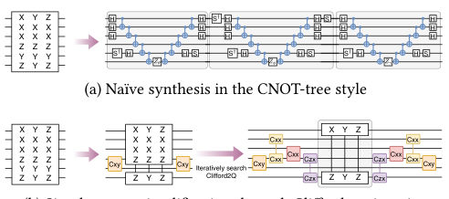
<figcaption class="paper-figure-caption"><b>Fig 1.</b> Figure 1. (a) Naïve synthesis vs. (b) simultaneous simplifica- tion of Pauli exponentials.</figcaption>
</figure>
<figure class="paper-figure-card">
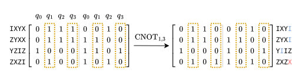
<figcaption class="paper-figure-caption"><b>Fig 2.</b> Figure 2. Example of BSF update by Clifford transformation.</figcaption>
</figure>
<figure class="paper-figure-card">
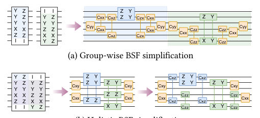
<figcaption class="paper-figure-caption"><b>Fig 3.</b> Figure 3. Comparison of (a) group-wise and (b) holistic BSF simplification. By evaluating Clifford transformations against the entire tableau, the holistic approach captures cross-support overlaps, thereby halving the required UCG conjugations in this example.</figcaption>
</figure>
<figure class="paper-figure-card">
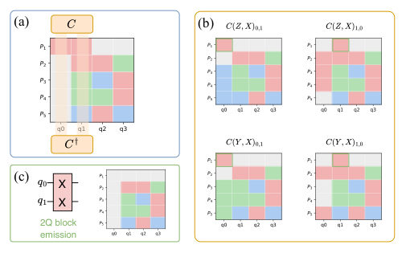
<figcaption class="paper-figure-caption"><b>Fig 4.</b> Figure 4. Avoiding degradation via early two-qubit block emission during BSF simplification (𝑋, 𝑌, 𝑍shown as red, green, blue). (a) Initial Pauli strings to be simplified by Clif- ford conjugation acting on (𝑞0,𝑞1). (b) Forcing target 𝑃1 to weight-1 invariably inflates the weights of remaining strings. (c) Emitting 𝑃1 early at weight-2 prevents collateral inflation and significantly reduces overall synthesis overhead.</figcaption>
</figure>
<figure class="paper-figure-card">
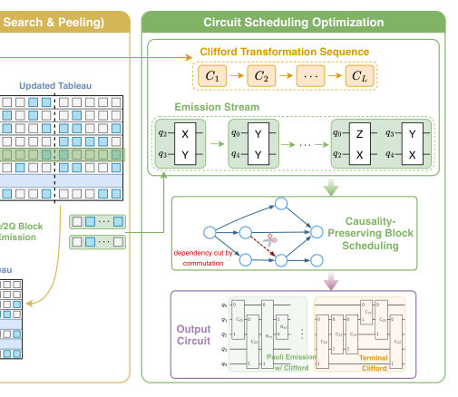
<figcaption class="paper-figure-caption"><b>Fig 5.</b> Figure 5. Overview of the Symphony compilation workflow.</figcaption>
</figure>
</div>
<p><strong>Summary.</strong> This paper presents Symphony, an advanced compiler that optimizes Hamiltonian simulation circuits by treating the entire Pauli sequence as a global algebraic structure represented by the Binary Symplectic Form (BSF). By applying controlled-Pauli Clifford transformations directly to this BSF tableau, it achieves superior circuit compression compared to existing methods. This results in substantial reductions in required two-qubit gates and overall circuit depth for quantum algorithms.</p>
<p><strong>Why it may be interesting.</strong> This work provides a powerful algorithmic tool for quantum circuit compilation, directly impacting the feasibility of running complex algorithms like VQE or QAOA on near-term hardware by minimizing gate count and depth.</p>
<details>
<summary>Detailed structure</summary>
<p><strong>Main problem.</strong> The core challenge is efficiently compiling Hamiltonian simulation workloads, which are expressed as Pauli exponential sequences, by fully exploiting their global algebraic structure.</p>
<p><strong>Main result.</strong> The proposed method achieves significant reductions in two-qubit gate count (average 59%) and circuit depth (average 91%) compared to naïve synthesis on standard benchmarks.</p>
<p><strong>Method.</strong> It introduces Symphony, a holistic compilation approach utilizing the Binary Symplectic Form (BSF) representation of Pauli strings. This involves applying generalized controlled-Pauli Clifford transformations directly to the global BSF tableau for simultaneous simplification and parallelism extraction.</p>
<p><strong>Model / system.</strong> The work focuses on quantum computation simulating time evolution governed by Hamiltonians expressed as weighted sums of Pauli strings ($\sum c_k P_k$). The input is a sequence of Pauli rotations, analyzed using the BSF representation which encodes commutation relations via symplectic geometry.</p>
<p><strong>Key observables.</strong> Two-qubit gate count and circuit depth are the primary optimization metrics. Other diagnostics include the BSF weight reduction and the rank of interaction matrices for two-qubit blocks.</p>
<p><strong>Important parameters / regimes.</strong> The efficiency is measured by factors like $1.14–1.58	imes$ improvement in CNOT gates and $1.87–5.67	imes$ improvement in circuit depth over prior state-of-the-art compilers.</p>
<p><strong>Assumptions / limitations.</strong> Prior methods are limited by constrained paradigms, such as strict adherence to 'first-diagonalize, then-search-CNOT' or computationally expensive long-horizon searches; Symphony overcomes these limitations holistically.</p>
<p><strong>Figures summary.</strong> Figures illustrate the comparison between naïve synthesis and simultaneous simplification via Clifford conjugation on a BSF tableau. Other figures detail how Clifford transformations act as symplectic updates on the BSF structure.</p>
<p><strong>Paper structure.</strong> The paper develops theory around Pauli commutation using the symplectic form, introduces Symphony's global BSF transformation framework, details the causality-preserving block rescheduling heuristic, and validates its performance against state-of-the-art compilers across multiple benchmarks.</p>
</details>
<details>
<summary>Abstract</summary>
<p>Hamiltonian simulation is a core quantum workload, underpinning variational quantum algorithms and Trotterized time evolution. Such programs are expressed as Pauli exponential sequences, exhibiting structural patterns that are highly amenable to high-level synthesis and optimization. Existing compilers, however, fail to fully unlock the optimization potential of their global algebraic structure, even when employing advanced graph- or tableau-based methods.   We present Symphony, a holistic compilation approach built on the binary symplectic form (BSF) representation of Pauli strings. Unlike prior group-wise BSF simplification and path-based Pauli network synthesis, Symphony applies generalized controlled-Pauli Clifford transformations directly to a global BSF tableau, adaptively reducing active Pauli rows and emitting eligible two-qubit blocks other than single-qubit rotations in a forward Clifford frame. Following algebraic simplification, Symphony performs a causality-preserving block rescheduling heuristic that respects frame-induced dependencies while exposing extensive two-qubit block parallelism opportunities. This streamlined compilation style comprehensively exploits simultaneous simplification and commutativity opportunities, achieving efficient global optimization without relying on computationally expensive heuristics or long-horizon searches. Across the generic Hamiltonian simulation benchmarks in HamLib, Symphony achieves average reductions of 59% in two-qubit gate count and 91% in circuit depth. It strictly Pareto-dominates prior state-of-the-art compilers, requiring 1.14--1.58$\times$ fewer two-qubit gates and especially shrinking two-qubit circuit depth by a substantial factor of 1.87--5.67$\times$ on average.</p>
</details>
<p><sub><a href="#top">↑ back to top</a></sub></p>

<p><a id="paper-2608.11563"></a></p>
<h3 id="efficient-quantum-modular-reduction-crandall-reduction-and-its-fault-tolerant-resource-analysis"><a href="http://arxiv.org/abs/2608.11563v1">Efficient Quantum Modular Reduction: Crandall reduction and its Fault-tolerant resource analysis</a></h3>
<p><strong>Authors:</strong> Changyeol Lee, Sungyeon Kook, Wooyeong Song, Kwangil Bae, Wonhyuk Lee, IlKwon Sohn<br>
<strong>Type:</strong> theory · <strong>Category:</strong> quantum information and computing · <strong>PDF:</strong> <a href="https://arxiv.org/pdf/2608.11563v1">https://arxiv.org/pdf/2608.11563v1</a><br>
<strong>Analysis basis:</strong> full PDF text, analyzed in chunks</p>
<div class="figure-strip-hint">↔ Scroll figures horizontally</div>
<div class="paper-figures-scroll">
<figure class="paper-figure-card">
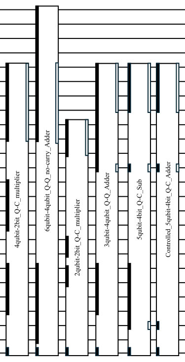
<figcaption class="paper-figure-caption"><b>Fig 1.</b> Figure 1. Overall structure of the quantum Crandall reduction circuit for n = 4 and c = 3. The folding stage consists of quantum-classical multiplication by c and quantum-quantum addition to accumulate the folded values. The normalization stage subtracts the fixed modulus q = 2n −c and conditionally restores it when the subtraction result is negative. After forward evaluation, the desig- nated output register M contains a mod q, while some ancillary work qubits retain input-dependent intermediate states until the inverse circuit is applied. The illustrated circuit corresponds to Crandall reduction-1 with one normalization block; Crandall reduction-2 applies the same normalization block...</figcaption>
</figure>
<figure class="paper-figure-card">
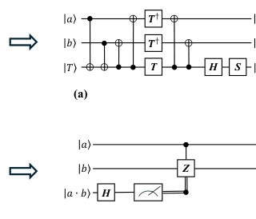
<figcaption class="paper-figure-caption"><b>Fig 2.</b> Figure 2. Temporary logical-AND quantum circuit. (a) Computation of the mapping |a⟩|b⟩|0⟩7→ |a⟩|b⟩|a·b⟩, which stores the logical-AND value used for carry or borrow propagation. (b) Measurement- and-fixup uncomputation of the stored logical-AND, which removes the temporary value without additional T gates.</figcaption>
</figure>
<figure class="paper-figure-card">
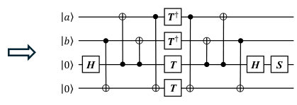
<figcaption class="paper-figure-caption"><b>Fig 3.</b> Figure 3. Temporary logical-AND computation circuit with T-depth 1. An additional temporary ancilla is used to parallelize the T/T † gates, reducing the T-depth from 2 to 1 while preserving the T-count of 4. The additional ancilla is restored to |0⟩after the computation and can be reused in subsequent arithmetic operations.</figcaption>
</figure>
<figure class="paper-figure-card">
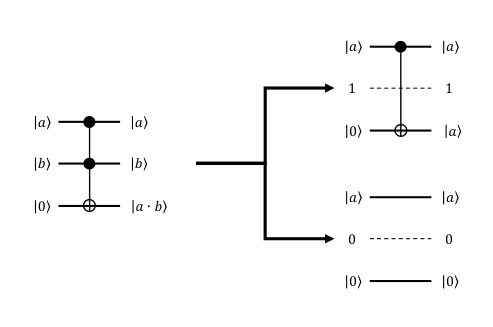
<figcaption class="paper-figure-caption"><b>Fig 4.</b> Figure 4. Simplification of a CCX gate operation when one control input is fixed as a classical bit and the target ancilla is initialized to |0⟩. If the classical bit is 1, the CCX gate reduces to a CX gate and the target becomes |a⟩. If the classical bit is 0, the operation is removed and the target remains |0⟩.</figcaption>
</figure>
<figure class="paper-figure-card">
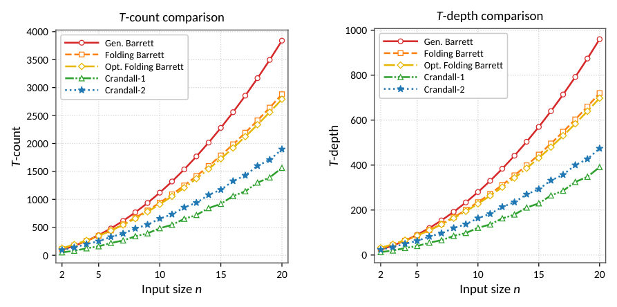
<figcaption class="paper-figure-caption"><b>Fig 5.</b> Figure 5. Logical T-count and T-depth comparison for Barrett reduction circuits and the proposed Crandall reduction circuits. Crandall reduction-1 achieves the lowest non-Clifford cost, while Crandall reduction-2 supports a wider range of c with moderate additional overhead.</figcaption>
</figure>
</div>
<p><strong>Summary.</strong> This paper presents a novel, resource-efficient reversible quantum circuit formulation for modular reduction using Crandall reduction tailored for pseudo-Mersenne moduli. By analyzing the folding and normalization steps, the authors derive two variants that significantly reduce the required T-count and T-depth compared to established methods like Barrett reduction. This work demonstrates the practical importance of exploiting modulus-specific arithmetic structure in designing fault-tolerant quantum algorithms.</p>
<p><strong>Why it may be interesting.</strong> While focused on computation rather than AMO physics, the rigorous analysis of resource scaling (T-depth/T-count) and fault tolerance is highly relevant to any quantum simulation or algorithm implementation that requires deep circuits.</p>
<details>
<summary>Detailed structure</summary>
<p><strong>Main problem.</strong> The core problem is developing highly efficient, reversible quantum circuits for modular reduction, which is a critical component in quantum algorithms like Shor's algorithm.</p>
<p><strong>Main result.</strong> The authors propose two variants of Crandall reduction that achieve significantly lower T-count and T-depth (up to 46.9% reduction at n=10) compared to optimized folding Barrett reduction, even when analyzed under fault-tolerant surface code models.</p>
<p><strong>Method.</strong> They translate classical modular arithmetic techniques for pseudo-Mersenne moduli ($q = 2^n - c$) into explicit reversible quantum circuits by analyzing the necessary folding and normalization steps.</p>
<p><strong>Model / system.</strong> The work is situated in fault-tolerant quantum computation, utilizing resource estimates (T-count, T-depth) derived from surface code analysis. The arithmetic operations are modeled using specialized quantum gates for addition, multiplication, and subtraction.</p>
<p><strong>Key observables.</strong> T-count, T-depth, required qubits, and estimated runtimes under the Sparse Blossom decoder.</p>
<p><strong>Important parameters / regimes.</strong> Modulus size parameter $n$, the constant $c$ defining the modulus structure ($q=2^n-c$), and the specific normalization steps (one-step vs. two-step).</p>
<p><strong>Assumptions / limitations.</strong> The resource estimates are based on worst-case logical bounds, assuming the use of a T-depth-one primitive for temporary logical-AND computation.</p>
<p><strong>Figures summary.</strong> Figures illustrate the overall circuit structure for small parameters (n=4, c=3), detail quantum circuits for arithmetic components like adders and multipliers, and show specialized logic gates used in the reduction process.</p>
<p><strong>Paper structure.</strong> The paper progresses by first identifying the structural advantage of Crandall reduction over Barrett reduction. It then derives explicit reversible quantum circuit formulations (Crandall-1 and Crandall-2) based on normalization requirements, followed by detailed resource analysis yielding closed-form T-depth formulas, culminating in performance comparisons against existing methods.</p>
</details>
<details>
<summary>Abstract</summary>
<p>Modular arithmetic is central to quantum algorithms for cryptographic problems, including Shor's algorithm and Grover-based cryptanalysis, with modular reduction contributing substantially to circuit cost. Pseudo-Mersenne moduli $q=2^n-c$ allow classical Crandall reduction to replace division with folding and constant arithmetic, providing a structural opportunity for more efficient quantum modular reduction than Barrett reduction. We translate this advantage into a reversible quantum setting by deriving explicit folding and normalization conditions for $2n$-bit inputs. To the best of our knowledge, this constitutes the first exact reversible quantum circuit formulation of Crandall reduction. Based on this formulation, we develop two variants: Crandall reduction-1 is designed to minimize execution cost through one-step normalization, whereas Crandall reduction-2 uses two-step normalization to support a wider range of $c$ with limited overhead. Logical resource estimates show that both variants require fewer qubits and lower T-count and T-depth than optimized folding Barrett reduction. At $n=10$, Crandall reduction-1 reduces both T-count and T-depth by approximately 46.9% relative to optimized folding Barrett reduction. Surface-code analysis further shows that, at $n=20$ under the Sparse Blossom decoder, the estimated runtimes of the two variants are 30.05 ms and 35.39 ms, respectively, compared with 53.77 ms for optimized folding Barrett reduction. These results demonstrate the practical value of exploiting modulus-specific arithmetic structure in fault-tolerant quantum circuit design.</p>
</details>
<p><sub><a href="#top">↑ back to top</a></sub></p>

<p><a id="paper-2608.11385"></a></p>
<h3 id="evaluating-qaoa-expectation-values-can-be-as-hard-as-counting-optimal-solutions"><a href="http://arxiv.org/abs/2608.11385v1">Evaluating QAOA expectation values can be as hard as counting optimal solutions</a></h3>
<p><strong>Authors:</strong> Stuart Hadfield<br>
<strong>Type:</strong> theory · <strong>Category:</strong> quantum information and computing · <strong>PDF:</strong> <a href="https://arxiv.org/pdf/2608.11385v1">https://arxiv.org/pdf/2608.11385v1</a><br>
<strong>Analysis basis:</strong> full PDF text, analyzed in chunks</p>
<div class="figure-strip-hint">↔ Scroll figures horizontally</div>
<div class="paper-figures-scroll">
<figure class="paper-figure-card">
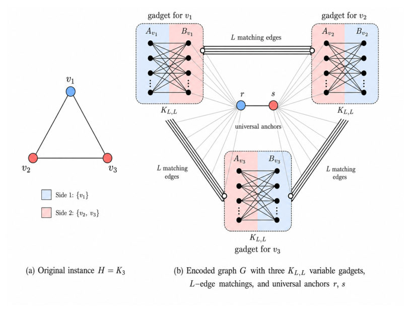
<figcaption class="paper-figure-caption"><b>Fig 1.</b> Figure 1: The balanced counting gadget for the source instance K3 (triangle graph). Blue and red indicate the two labels of one source maximum cut and its corresponding lift. Every KL,L variable gadget is cut completely, so each Av and Bv lie on opposite sides; the synchronous matchings among the A-parts reproduce the three source edges. The separated anchors r and s are adjacent to one another and each is joined to every vertex in W. Each part Av, Bv in panel (b) contains L vertices; only representative vertices and edges are shown. For H = K3, the constructed graph G(H) has L = 9, N = 56, and maximum cut counts |# MC(G)| = 2|# MC(H)| = 12. This figure was created with assistance from...</figcaption>
</figure>
</div>
<p><strong>Summary.</strong> This paper rigorously proves that evaluating expectation values for QAOA circuits at depth $p \geq 2$ is computationally intractable, specifically showing it is #P-hard. By constructing specialized graph gadgets, the authors reduce the problem of counting maximum cuts to calculating a specific coefficient in the QAOA's resulting Laurent polynomial. This establishes a significant complexity barrier for variational quantum algorithms.</p>
<p><strong>Why it may be interesting.</strong> This work provides a strong theoretical barrier, suggesting that simulating or optimizing complex quantum algorithms beyond shallow circuits requires computational resources equivalent to solving hard counting problems.</p>
<details>
<summary>Detailed structure</summary>
<p><strong>Main problem.</strong> The core problem is determining the computational complexity of evaluating expectation values for variational quantum algorithms, specifically QAOA applied to MaxCut.</p>
<p><strong>Main result.</strong> The authors prove that for fixed depth $p \geq 2$, evaluating these expectation values (and related quantities like gradients/Hessians) is #P-hard, meaning it is as hard as counting optimal solutions.</p>
<p><strong>Method.</strong> The hardness proof refines previous work by constructing specialized 'counting gadgets' within the QAOA framework. This allows mapping the problem of counting maximum cuts ($\#	ext{MC}(G)$) to the coefficient extraction from a Laurent polynomial derived from the expectation value.</p>
<p><strong>Model / system.</strong> The study focuses on the Quantum Approximate Optimization Algorithm (QAOA) applied to finding the MaxCut of a graph $G$. The system is described by cost and mixer Hamiltonians, leading to quantum states $|\psi_p(\gamma, eta)
angle$ at depth $p$.</p>
<p><strong>Key observables.</strong> The primary observable is the cost expectation value $F_p(G; \gamma, eta) = \langle\psi_p|C_G|\psi_p
angle$, and also single pairwise correlators $\langle Z_r Z_s 
angle$.</p>
<p><strong>Important parameters / regimes.</strong> The depth parameter $p$ is critical: $p=1$ is tractable ($\in 	ext{FP}$), while fixed $p \geq 2$ exhibits #P-hardness.</p>
<p><strong>Assumptions / limitations.</strong> The hardness results apply to worst-case families of graphs and require evaluating the expectation value with exponential precision ($\epsilon = 2^{-cN}$).</p>
<p><strong>Figures summary.</strong> Figure 1 illustrates a balanced counting gadget for $K_3$, demonstrating how the number of maximum cuts in the constructed graph relates directly to the original graph's count.</p>
<p><strong>Paper structure.</strong> The paper first establishes tractability for $p=1$ (Chunk 4). It then builds upon this by introducing specialized gadgets and mathematical tools (Laurent polynomials) to prove that exact evaluation becomes #P-hard for fixed $p \geq 2$ (Chunks 1 &amp; 2). Finally, it extends the hardness result to computing derivatives like gradients and Hessians (Chunk 3).</p>
</details>
<details>
<summary>Abstract</summary>
<p>Evaluating expectation values is a critical task for variational quantum eigensolvers, and for parameterized quantum circuits and other quantum algorithms more generally. We consider the well-studied case of the Quantum Approximate Optimization Algorithm (QAOA) for the MaxCut problem. Recent work of Wang et al. [arXiv:2511.20212] showed this task to be NP-hard in general for any QAOA depth $p\geq 2$, complementing past results showing efficiently computable formulas for $p=1$ with arbitrary problem graphs. We sharpen this dichotomy showing that for $p\geq 2$ exact or exponentially precise cost expectation value evaluation is #P-hard under deterministic polynomial-time Turing reductions. Hardness at $p\geq 2$ is shown to remain even for evaluating single pairwise correlators $\langle Z\otimes Z\rangle $, as well as for highly restricted sets of algorithm parameters. Our proof refines the NP-hardness construction of Wang et al. that recovers the maximum cut value from the largest exponent of a QAOA Laurent polynomial, utilizing a distinct and simpler construction that extracts a value proportional to the total number of maximum cuts, in addition to the optimal cut value. Thus we show that the QAOA expectation value hardness transition from $p=1$ to $p=2$ is not only from tractability to optimization hardness, but to that of counting optimal solutions. As an application we show our results imply analogous hardness results for computing gradients and Hessians of QAOA circuits.</p>
</details>
<p><sub><a href="#top">↑ back to top</a></sub></p>

<p><a id="paper-2608.11966"></a></p>
<h3 id="ideal-heat-engine-cycles-at-maximal-efficiency-the-ideal-gas-and-beyond"><a href="http://arxiv.org/abs/2608.11966v1">Ideal heat engine cycles at maximal efficiency -- the ideal gas and beyond</a></h3>
<p><strong>Authors:</strong> Gregory Behrendt, Sebastian Deffner<br>
<strong>Type:</strong> theory · <strong>Category:</strong> statistical mechanics · <strong>PDF:</strong> <a href="https://arxiv.org/pdf/2608.11966v1">https://arxiv.org/pdf/2608.11966v1</a><br>
<strong>Analysis basis:</strong> full PDF text, analyzed in chunks</p>
<div class="figure-strip-hint">↔ Scroll figures horizontally</div>
<div class="paper-figures-scroll">
<figure class="paper-figure-card">
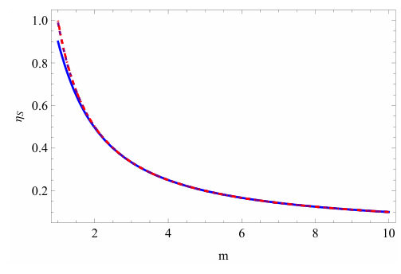
<figcaption class="paper-figure-caption"><b>Fig 1.</b> FIG. 1. Stirling efficiency (14) as a function of m, for Tc/Th = 10−1 (blue, solid line), Tc/Th = 10−2 (purple, dashed line), and Tc/Th = 10−3 (red, dot-dashed line)</figcaption>
</figure>
<figure class="paper-figure-card">
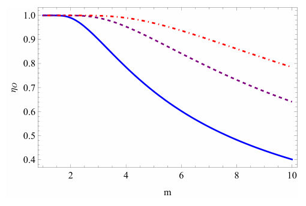
<figcaption class="paper-figure-caption"><b>Fig 2.</b> FIG. 2. Otto efficiency (23) as a function of m, for n = 2 and κ = 10−1 (blue, solid line), κ = 10−2 (purple, dashed line), and κ = 10−3 (red, dot-dashed line)</figcaption>
</figure>
<figure class="paper-figure-card">
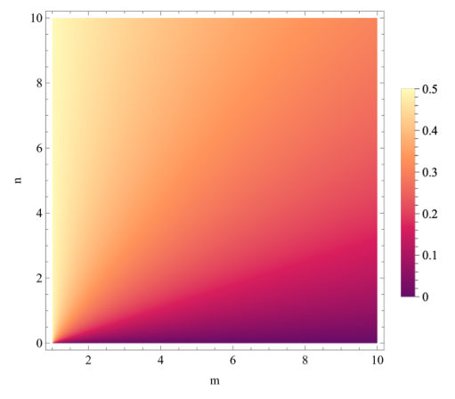
<figcaption class="paper-figure-caption"><b>Fig 3.</b> FIG. 3. Brayton efficiency (34) as a function of m and n for C = 2.</figcaption>
</figure>
</div>
<p><strong>Summary.</strong> This paper investigates which working medium maximizes the efficiency of standard heat engines like Stirling, Otto, and Brayton. By analyzing a general thermodynamic potential, the authors prove that maximum efficiency is achieved when the system's caloric equation of state is linear in temperature. This result extends beyond ideal gases to include models like harmonic oscillators.</p>
<p><strong>Why it may be interesting.</strong> While focused on classical thermodynamics, the rigorous mathematical framework linking efficiency maximization to specific functional forms (linear temperature dependence) provides insight into optimal constraints for energy conversion processes relevant in quantum systems modeling.</p>
<details>
<summary>Detailed structure</summary>
<p><strong>Main problem.</strong> The study aims to determine the optimal working medium for an ideal heat engine cycle, moving beyond the standard assumption that the ideal gas is always optimal.</p>
<p><strong>Main result.</strong> Maximum efficiency across multiple cycles (Stirling, Otto, Brayton) is achieved when the working medium's caloric equation of state is linear in temperature ($m=1$).</p>
<p><strong>Method.</strong> The authors derive exact efficiency expressions for three canonical heat engine cycles using a general polynomial Helmholtz potential and analyzing their dependence on system parameters.</p>
<p><strong>Model / system.</strong> The analysis considers general thermodynamic systems defined by a polynomial Helmholtz potential, applied to the ideal Stirling, Otto, and Brayton cycles. The working mediums include ideal gases, classical harmonic oscillators, and rubber band models.</p>
<p><strong>Key observables.</strong> Efficiency ($\eta$) of the heat engine cycles.</p>
<p><strong>Important parameters / regimes.</strong> Exponents $n$ and $m$ derived from the fundamental thermodynamic relation; cycle ratios (e.g., compression ratio $\kappa$).</p>
<p><strong>Assumptions / limitations.</strong> The underlying thermodynamic relationship is assumed to be a polynomial function of molar volume and temperature, and endoreversible cycles are analyzed.</p>
<p><strong>Figures summary.</strong> Figure 1 shows Stirling efficiency ($\eta_S$) maximized at $m=1$, and Figure 2 shows Otto efficiency ($\eta_O$) suggesting maximization near $m=1$.</p>
<p><strong>Paper structure.</strong> The paper systematically derives closed-form efficiencies for the Stirling, Otto, and Brayton cycles based on a general fundamental relation. The analysis consistently points to the condition $m=1$ as maximizing performance across all studied engines.</p>
</details>
<details>
<summary>Abstract</summary>
<p>Given a particular heat engine cycle, what is the optimal working medium that results in the highest efficiency? While one might jump to the conclusion that it must surely be the ideal gas, the situation is actually more intricate. Starting with a general Hemlholtz potential that depends polynomially on molar volume and temperature we derive exact expressions for the ideal Stirling, Otto, and Brayton cycles. We find that quite universally the maximal efficiency is achieved for thermodynamics systems, whose working mediums are linear in temperature. This includes the ideal gas, but also classical harmonic oscillators and pheonmenological models of the rubber band.</p>
</details>
<p><sub><a href="#top">↑ back to top</a></sub></p>

<p><a id="paper-2608.11776"></a></p>
<h3 id="spin-nematic-liquid-crystal-and-scalar-spin-chirality-in-tetragonal-lattice-ybmnbimath829math"><a href="http://arxiv.org/abs/2608.11776v1">Spin nematic liquid crystal and scalar spin chirality in tetragonal lattice YbMnBi$_2$</a></h3>
<p><strong>Authors:</strong> Yaofeng Xie, Sijie Xu, Yu Pan, Taekoo Oh, Tingjun Zhang, Masaaki Matsuda, Zhaoyu Liu, Zehao Wang, Yiheng Wang, Siyu Pan, Avishek Maity, Sylwia Pawledzio, Xiaoping Wang, Songxue Chi, Feng Ye, Yiqing Hao, Huibo Cao, Barry L. Winn, Melissa K. Graves-Brook, Shuai Wu, Fan Li, Xiaoyuan Zhou, Claudia Felser, Naoto Nagaosa, Pengcheng Dai<br>
<strong>Type:</strong> experiment · <strong>Category:</strong> strongly correlated electrons · <strong>PDF:</strong> <a href="https://arxiv.org/pdf/2608.11776v1">https://arxiv.org/pdf/2608.11776v1</a><br>
<strong>Analysis basis:</strong> full PDF text, analyzed in chunks</p>
<div class="figure-strip-hint">↔ Scroll figures horizontally</div>
<div class="paper-figures-scroll">
<figure class="paper-figure-card">
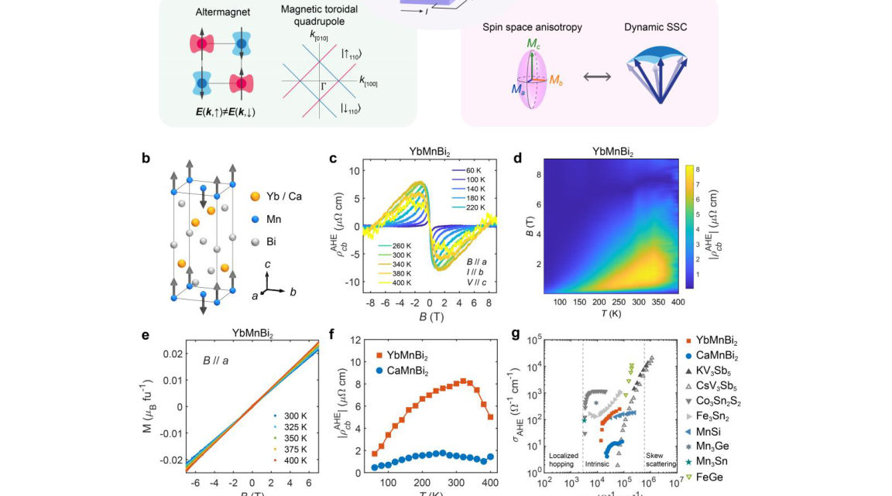
<figcaption class="paper-figure-caption"><b>Fig 1.</b> Figure 1 | Mechanisms of AHE, crystal structure and AHE of AMnBi2 . a, Schematics of mechanisms of AHE, including real-space SSC in non-collinear magnets and skyrmion, Berry curvature in momentum space of Weyl semimetals, altermagnets, and spin nematic state induced dynamic SSC. The pink ellipsoid represents the magnetic responses 𝑀𝑎, 𝑀𝑏, and 𝑀𝑐 measured by neutron LPA along the crystalline a-, b-, and c-axis directions. b, Crystal structure of AMnBi2 (A=Ca,Yb) showing the reported C-type AFM structure(36, 79, 80). c, Magnetic field dependence of anomalous Hall resistivity 𝜌𝑐𝑏</figcaption>
</figure>
<figure class="paper-figure-card">
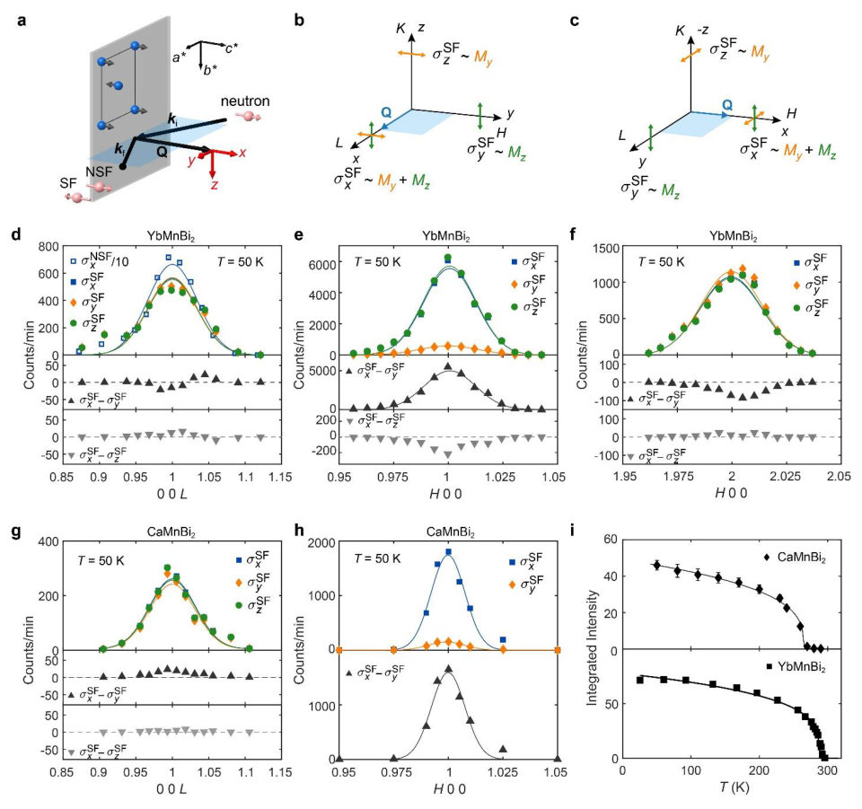
<figcaption class="paper-figure-caption"><b>Fig 2.</b> Figure 2 | Polarized neutron diffraction results of AMnBi2. a, Scattering geometry of polarized neutron scattering experiment in the [𝐻, 0, 𝐿] scattering plane. Incident neutron spins are polarized along the 𝒙, 𝒚, and 𝒛 directions, corresponding to directions along the 𝑸, orthogonal to 𝑸 within the scattering plane, and perpendicular to the scattering plane, respectively. b, SF cross sections 𝜎𝑥,𝑦,𝑧</figcaption>
</figure>
<figure class="paper-figure-card">
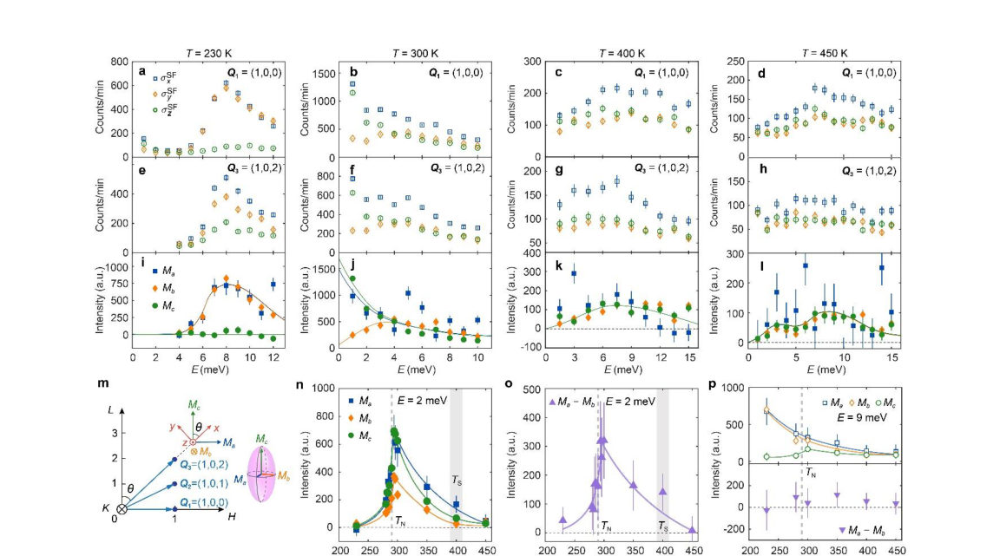
<figcaption class="paper-figure-caption"><b>Fig 3.</b> Figure 3 | Polarized inelastic neutron scattering results of YbMnBi2. l. a-d, Energy scans of 𝜎𝑥,𝑦,𝑧</figcaption>
</figure>
<figure class="paper-figure-card">
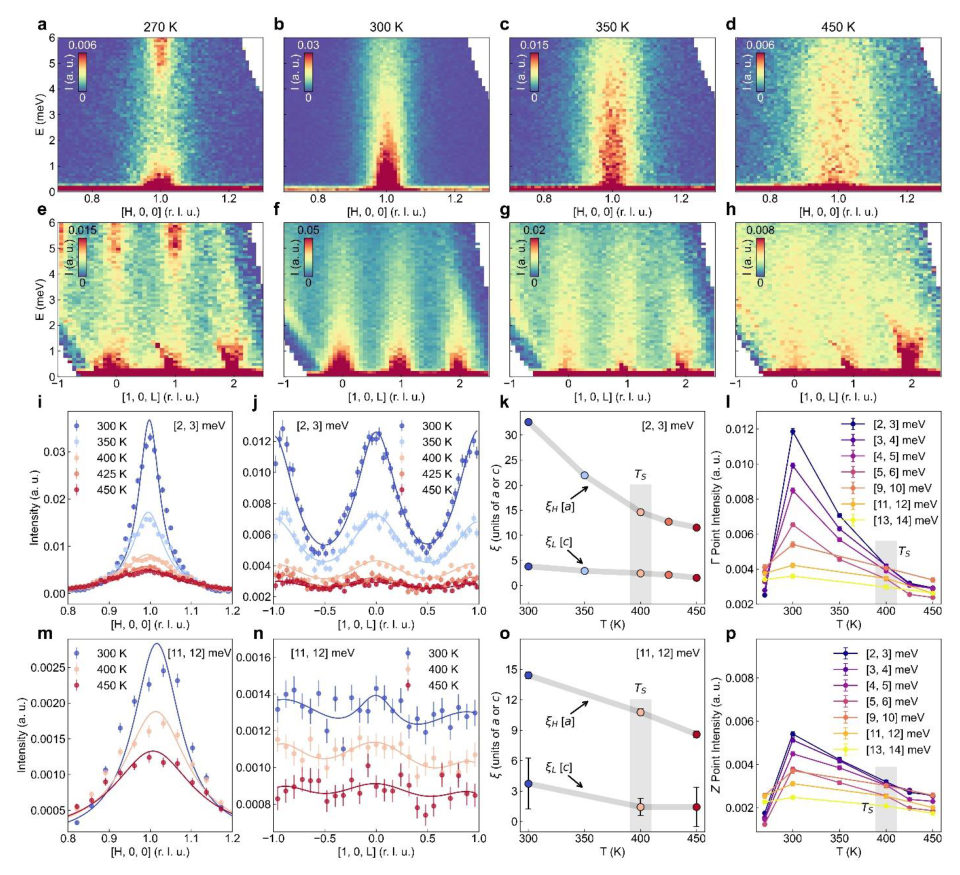
<figcaption class="paper-figure-caption"><b>Fig 4.</b> Figure 4 | Spin dynamics of YbMnBi2 across 𝑻𝑵 probed by unpolarized neutrons. a-d, Inelastic neutron scattering spectra showing spin excitations along the [𝐻, 0,0] direction near 𝑸= (1,0,0) at 𝑇= 270, 300, 350, and 450 K, respectively. e-h, Spin excitations along the [1,0, 𝐿]direction around 𝑸= (1,0,0) measured at the same temperatures. The dispersive low- energy scattering at (1,0,1) and (1,0,2) in h is acoustic phonons. i, Constant-𝐸 cuts integrated over [2, 3] meV along the [𝐻, 0,0] direction at different temperatures. The solid lines indicate the Lorentzian fit to extract the in-plane correlation length. j, Similar cuts of spin excitation along the [1,0, 𝐿] direction, fitted with...</figcaption>
</figure>
<figure class="paper-figure-card">
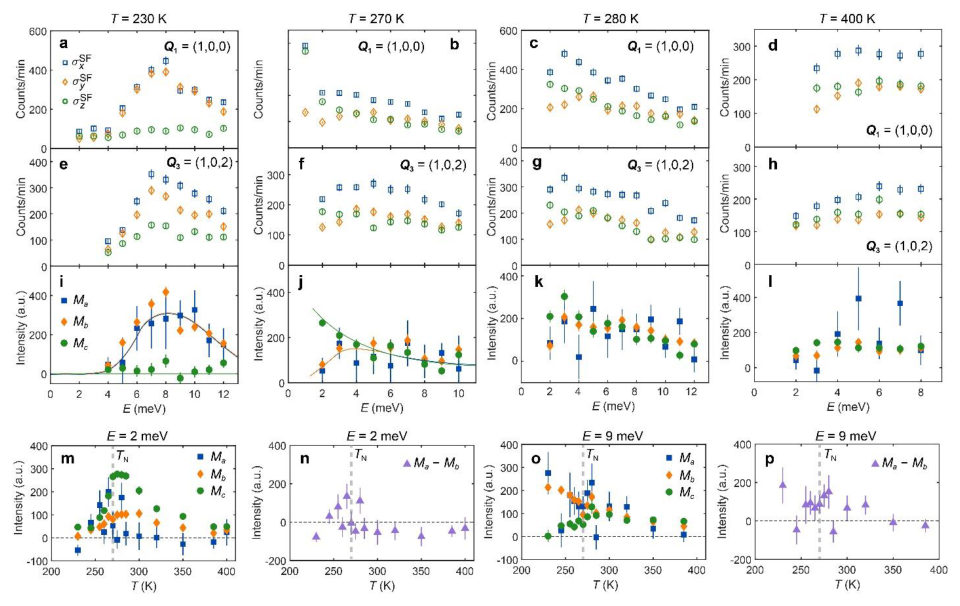
<figcaption class="paper-figure-caption"><b>Fig 5.</b> Figure 5 | Polarized inelastic neutron scattering results of CaMnBi2. a-d, Energy scans of 𝜎𝑥,𝑦,𝑧</figcaption>
</figure>
</div>
<p><strong>Summary.</strong> The authors investigate the interplay between spin nematic order and scalar spin chirality in $    ext{YbMnBi}_2$ using polarized neutron scattering. They find that $ ext{YbMnBi}_2$ exhibits a high-temperature dynamic spin nematic phase, which couples with an external magnetic field to induce anomalous Hall effects (AHE) and anomalous Nernst effects (ANE). This provides strong evidence for composite spin orders driving room-temperature spintronic phenomena in antiferromagnets.</p>
<p><strong>Why it may be interesting.</strong> This work connects exotic magnetic orders (nematicity) observed through neutron scattering directly to measurable transport phenomena (AHE), providing a concrete platform for studying emergent quantum magnetotransport effects in correlated materials.</p>
<details>
<summary>Detailed structure</summary>
<p><strong>Main problem.</strong> The study investigates the relationship between spin nematic order, scalar spin chirality (SSC), and anomalous magnetotransport effects in tetragonal magnetic compounds.</p>
<p><strong>Main result.</strong> In $   ext{YbMnBi}_2$, a dynamic spin nematic phase exists above $T_N$ that couples with an external field to induce measurable AHE and ANE, phenomena absent in the analogous $ ext{CaMnBi}_2$.</p>
<p><strong>Method.</strong> The research employs polarized neutron scattering (LPA) to probe spin excitations and measures magnetotransport properties like the Anomalous Hall Effect (AHE).</p>
<p><strong>Model / system.</strong> The system under study is the tetragonal lattice $  ext{YbMnBi}_2$ compared to $    ext{CaMnBi}_2$, which are characterized as collinear antiferromagnets. The physics involves complex spin orders: nematicity (breaking rotational symmetry) and SSC (a three-spin, time-reversal symmetry breaking order).</p>
<p><strong>Key observables.</strong> Spin excitation anisotropy ($M_a$ vs $M_b$ vs $M_c$), AHE/ANE magnitude, and the temperature dependence of magnetic scattering intensities.</p>
<p><strong>Important parameters / regimes.</strong> Critical temperatures like $T_N \approx 270-290	ext{ K}$ and a nematic crossover temperature around $400	ext{ K}$; external magnetic field strength ($B$).</p>
<p><strong>Assumptions / limitations.</strong> The analysis assumes that the observed AHE/ANE in $  ext{YbMnBi}_2$ is due to coupling between the dynamic spin nematic phase and SSC, which is not present in $ ext{CaMnBi}_2$.</p>
<p><strong>Figures summary.</strong> Figures illustrate temperature dependence of scattering cross sections ($\sigma^{	ext{SF}}$) showing changes in magnetic moment anisotropy across $T_N$ and $T_S$, alongside plots detailing the AHE response vs. field for both compounds.</p>
<p><strong>Paper structure.</strong> The paper establishes background on spin nematicity and SSC, uses polarized neutron scattering to characterize the distinct dynamic spin nematic phase in $    ext{YbMnBi}_2$ above $T_N$, confirms the collinear AFM structure via multiple measurements, and finally links this high-temperature nematic state to field-induced AHE/ANE.</p>
</details>
<details>
<summary>Abstract</summary>
<p>A spin nematic order, analogous to the nematic liquid crystal, characterizes the spontaneous breaking of spin-space rotational symmetry while preserving time-reversal ($T$) symmetry. In contrast, scalar spin chirality (SSC), a composite three-spin order, breaks $T$ symmetry and is known to induce an anomalous Hall effect (AHE). Although a spin nematic phase has been suggested in frustrated magnets and the square-lattice iridate, how it might affect magnetotransport properties is unknown. Here we use polarized neutron scattering to show that tetragonal $A$MnBi$_2$ ($A$ = Ca, Yb) is a strictly $c$-axis-aligned collinear antiferromagnet (C-type), with $T_N \approx 270$ K and 290 K, respectively. On cooling from 450 K to $T_N$, low-energy spin excitations in YbMnBi$_2$ spontaneously change from isotropic to anisotropic in spin space within the tetragonal plane, forming a dynamic spin nematic phase around 400 K due to heavy Yb-induced spin-orbit coupling, before gapping out below $T_N$. Similar measurements on CaMnBi$_2$ reveal isotropic paramagnetic scattering without a spin nematic phase above $T_N$. Under an in-plane magnetic field, the Yb$^{3+}$ moments may interact with the dynamic spin nematic phase to induce nonzero SSC, giving rise to AHE and an anomalous Nernst effect (ANE) in YbMnBi$_2$ that are absent in CaMnBi$_2$ above $T_N$. A symmetry-based Ginzburg-Landau analysis shows that coupling terms between the nematic order and SSC are allowed under an external magnetic field, which could explain the rapid increase of AHE with field in YbMnBi$_2$. Our results provide compelling evidence for dynamic SSC-induced AHE and ANE in the paramagnetic phase of a compensated collinear antiferromagnet, opening a new avenue for the physics of composite spin orders and room-temperature spintronics without magnetic order.</p>
</details>
<p><sub><a href="#top">↑ back to top</a></sub></p>
</details>
<h2 id="secondary-cond-mat-archives">Secondary cond-mat archives</h2>
<p><em>Papers from cond-mat.mtrl-sci, mes-hall, other, soft, supr-con. These archives are de-prioritized — they appear at the end regardless of relevance score.</em></p>
<h3 id="relevant-in-secondary-archives-23">Relevant in secondary archives (23)</h3>

<p><a id="paper-2608.11561"></a></p>
<h3 id="spatially-resolving-the-pre-thermal-anatomy-of-a-driven-bosonic-fluid"><a href="http://arxiv.org/abs/2608.11561v1">Spatially Resolving the Pre-Thermal Anatomy of a Driven Bosonic Fluid</a></h3>
<p><strong>Authors:</strong> Shantam Ravan, Aaron Müller, Johannes Cremer, Jonathan Curtis, Daniel Fernandez, Ronald Walsworth, Eugene Demler, Amir Yacoby<br>
<strong>Type:</strong> both · <strong>Category:</strong> statistical mechanics · <strong>PDF:</strong> <a href="https://arxiv.org/pdf/2608.11561v1">https://arxiv.org/pdf/2608.11561v1</a><br>
<strong>Analysis basis:</strong> full PDF text, analyzed in chunks
<strong>Topic relevance:</strong> 🔥 <code>driven-dissipative phase transition</code> <strong>4/5</strong> · 🔥 <code>scars &amp; prethermalization</code> <strong>4/5</strong> · <code>methods for driven-dissipative</code> <strong>3/5</strong> · <code>non-equilibrium universality</code> <strong>3/5</strong> · <code>Keldysh / 2PI / non-Gaussian methods</code> <strong>2/5</strong> · <code>analog quantum simulation</code> <strong>2/5</strong> · <code>correlated / nonlocal dissipation</code> <strong>2/5</strong> · <code>QC/QI experiment</code> <strong>1/5</strong> · <code>quantum measurements</code> <strong>1/5</strong> · <code>quantum optics experiment</code> <strong>1/5</strong></p>
<div class="figure-strip-hint">↔ Scroll figures horizontally</div>
<div class="paper-figures-scroll">
<figure class="paper-figure-card">
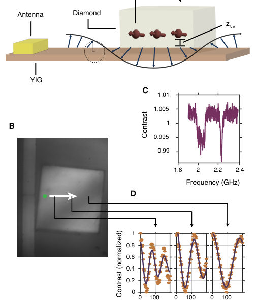
<figcaption class="paper-figure-caption"><b>Fig 1.</b> Figure 1. Experimental setup and single-frequency magnon detection. (A) Schematic diagram of the experimental ge- ometry showing the YIG thin film, diamond chip with NV centers, microwave stripline antenna, and magnetic bias field orientation. Spin waves in the YIG film are a result of the precession of individual magnetic dipoles around the equilib- rium magnetization, as indicated by the dashed circle. (B) Optical camera image of the diamond chip placed on the sur- face of the YIG adjacent to the stripline antenna. The green dot indicates the laser spot of the confocal microscope, used for NV excitation, which is scanned across the diamond chip to probe magnons at different positions...</figcaption>
</figure>
<figure class="paper-figure-card">
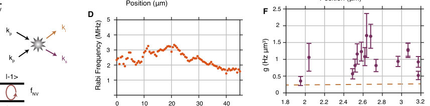
<figcaption class="paper-figure-caption"><b>Fig 2.</b> Figure 2. (A) (i) Pulse sequence to acquire data in (C): a standard NV ODMR sequence with a microwave signal at fixed frequency fp and an additional driving tone at swept frequency fs. (ii) Pulse sequence to acquire data in (D). The length of the microwave signal for both fp and fs is swept to drive Rabi oscillations between the NV spin states. (B) Schematic of the four magnon NV mixing process. The left side indicates that the consumption of two fp magnons and the emission of fs and fi magnons conserves energy. If the fi idler magnon is at the NV spin resonance, then the NV ensemble will be coherently driven. (C) Example measured NV ODMR spectrum along the diamond chip and hence the YIG...</figcaption>
</figure>
</div>

<p><strong>Summary.</strong> The paper uses NV magnetometry to image magnon dynamics in YIG films, revealing that the approach to thermal equilibrium is not random but proceeds through discrete, multi-stage parametric scattering cascades. By quantifying these steps and mapping out the resonance structure, it establishes spatially resolved magnonics as a powerful tool for studying non-equilibrium many-body physics.</p>
<p><strong>Why it may be interesting.</strong> This provides an experimental realization and quantitative framework for visualizing non-equilibrium many-body kinetics in a solid-state quantum system, directly addressing energy redistribution mechanisms beyond simple thermalization assumptions.</p>
<details>
<summary>Detailed structure</summary>
<p><strong>Main problem.</strong> The central challenge is understanding how coherently driven quantum many-body systems redistribute energy through discrete, non-equilibrium steps before reaching thermal equilibrium.</p>
<p><strong>Main result.</strong> The system's relaxation proceeds via a multi-stage, deterministic scattering cascade involving magnons in the slow magnon regime, rather than purely stochastic processes.</p>
<p><strong>Method.</strong> The authors combine NV magnetometry for micron-scale spatial imaging with theoretical modeling of parametric scattering instabilities to track energy flow.</p>
<p><strong>Model / system.</strong> The physical system is a Yttrium Iron Garnet (YIG) thin film hosting magnons (bosonic excitations). The dynamics are modeled using coupled-mode theory and nonlinear wave equations describing four-magnon interactions and subsequent cascading parametric resonances.</p>
<p><strong>Key observables.</strong> Spatial growth profiles of scattering products, frequency shifts ($\omega_{NL}$), Rabi oscillation decay rates ($\Omega_R$), and the resonance structure in momentum space.</p>
<p><strong>Important parameters / regimes.</strong> The coupling strength ($g$) of the four-magnon interaction, the microwave driving intensity ($I$), and the operating regime near ferromagnetic resonance (FMR).</p>
<p><strong>Assumptions / limitations.</strong> Standard perturbative approaches fail to capture the multi-stage kinetics; the analysis relies on identifying dynamic selection rules favoring momenta where group velocity vanishes ('slow magnon regime').</p>
<p><strong>Figures summary.</strong> Figures illustrate the experimental setup, ODMR spectra showing nonlinear dips, and Rabi oscillation measurements confirming spatial decay of coherent excitations.</p>
<p><strong>Paper structure.</strong> The work progresses by first isolating the elementary four-magnon interaction strength using two-tone driving, then observing a spontaneous, multi-generation scattering cascade driven by intense single-frequency excitation. Finally, theoretical modeling maps out the resonance structure across different cascade orders.</p>
</details>
<details>
<summary>Abstract</summary>
<p>Understanding how coherently driven quantum many-body systems redistribute energy prior to thermal equilibrium remains a central challenge in many-body physics. Here, we utilize nitrogen-vacancy (NV) magnetometry to perform micron-scale spatial imaging of room-temperature magnon dynamics in a yttrium iron garnet (YIG) thin film. We resolve a hierarchy of discrete parametric scattering events that serve as deterministic stepping stones toward thermalization. By applying a two-tone wave-mixing protocol, we first isolate the elementary four-magnon interaction and extract its coupling strength via the spatial growth of the scattering product. We then drive the system with an intense single-frequency excitation near ferromagnetic resonance, revealing that magnon-magnon interactions trigger a spontaneous, multi-generation scattering cascade. We demonstrate that in each generation, the dominant scattering channels correspond to one of the out-scattered magnons being in the slow magnon regime, reminiscent of the enhancement of optical nonlinearities in slow light systems. We capture this dynamics quantitatively using a near field magnonics framework and extract the cascade order and nonlinear coefficients directly from power-dependent frequency shifts. By revealing the multi-stage dynamical process through which monochromatic injected magnons evolve toward equilibrium, our work establishes spatially resolved magnonics as a powerful platform for visualizing non-equilibrium many-body kinetics.</p>
</details>
<p><sub><a href="#top">↑ back to top</a></sub></p>

<p><a id="paper-2608.11609"></a></p>
<h3 id="realization-of-arbitrary-gauge-fields-via-symmetry-protected-zero-modes"><a href="http://arxiv.org/abs/2608.11609v1">Realization of Arbitrary Gauge Fields via Symmetry-Protected Zero Modes</a></h3>
<p><strong>Authors:</strong> J. X. Dai, Bingbing Wang, Jiangzi Chen, Y. X. Zhao, Haoran Xue<br>
<strong>Type:</strong> both · <strong>Category:</strong> other · <strong>PDF:</strong> <a href="https://arxiv.org/pdf/2608.11609v1">https://arxiv.org/pdf/2608.11609v1</a><br>
<strong>Analysis basis:</strong> full PDF text, analyzed in chunks
<strong>Topic relevance:</strong> 🔥 <code>analog quantum simulation</code> <strong>4/5</strong> · <code>driven-dissipative phase transition</code> <strong>1/5</strong> · <code>methods for driven-dissipative</code> <strong>1/5</strong></p>
<div class="figure-strip-hint">↔ Scroll figures horizontally</div>
<div class="paper-figures-scroll">
<figure class="paper-figure-card">
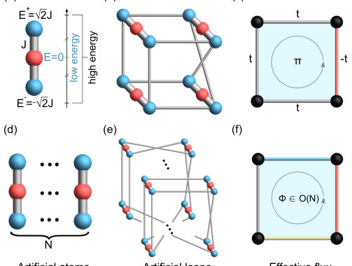
<figcaption class="paper-figure-caption"><b>Fig 1.</b> FIG. 1. General framework. (a) The three-site unit com- prising one A-site (red) and two B-sites (blue). This system possesses two high-energy modes ± √</figcaption>
</figure>
<figure class="paper-figure-card">
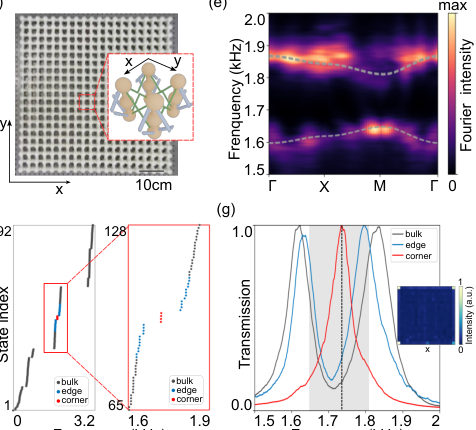
<figcaption class="paper-figure-caption"><b>Fig 2.</b> FIG. 2. A quadrupole topological insulator with Z2 gauge field. (a) The target lattice model (top) and the constructed lattice model using N = 1 artificial atoms (bottom). Gray (red) bonds represent positive (negative) couplings. (b) Cal- culated energy spectrum of the target model under a square geometry with t1 = 0.2 and t2 = 1. (c) Calculated energy spectrum of the constructed model under a square geometry with J = 10, t1 = 0.2 and t2 = 1. (d) Photograph of the fabricated acoustic sample. The inset shows the unit cell. (e) Measured (color map) and simulated (black curves) bulk dis- persion of the acoustic crystal. (f) Simulated eigenfrequencies of the acoustic crystal under a square...</figcaption>
</figure>
<figure class="paper-figure-card">
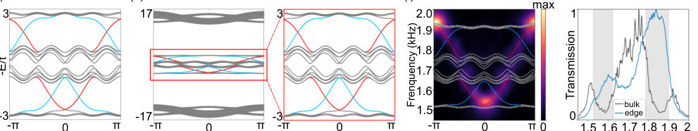
<figcaption class="paper-figure-caption"><b>Fig 3.</b> FIG. 3. An SO(2) Hofstadter model. (a) The target SO(2) Hofstadter lattice model, with hopping phases indicated. (b) The constructed lattice model with α = π/2. Dashed lines mark the unit cell. (c) Photograph of the fabricated acoustic sample with three and twelve unit cells along the x and y directions, respectively. The right panel illustrates the unit cell. (d) The Hofstadter butterfly spectrum calculated from the target lattice model, plotted against the flux ratio p/q (fixed q = 100). (e) Energy spectrum of the constructed lattice model, where the Hofstadter butterfly emerges in the low-energy window (red box). (f) Simulated eigenfrequencies as a function of p/q for acoustic crystals...</figcaption>
</figure>
<figure class="paper-figure-card">
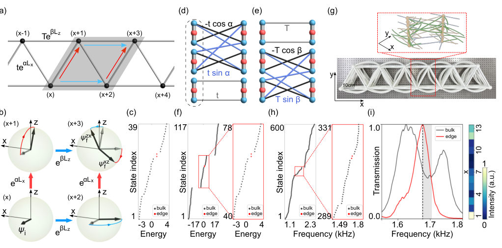
<figcaption class="paper-figure-caption"><b>Fig 4.</b> FIG. 4. A non-Abelian SO(3) gauge field. (a) The target lattice model featuring an SO(3) gauge field. Each site (x) hosts three orbitals, connected by the indicated hopping matrices. (b) Illustration of the non-Abelian nature of the SO(3) lattice gauge field. A particle initialized in state ψi at site x evolves into distinct final states when transported to site x + 3 along two different pathways. (c) Calculated energy spectrum of the target model in (a) under open boundary conditions. (d) and (e) Physical realizations of the hopping terms teαLx and TeβLz utilizing N = 3 artificial atoms. (f) Calculated energy spectrum of the constructed model. (g) Photograph of the acoustic sample. The top...</figcaption>
</figure>
</div>

<p><strong>Summary.</strong> The paper introduces a general and highly robust method to engineer arbitrary static O(N) lattice gauge fields in artificial systems. By exploiting symmetry-protected zero modes within bipartite units, the authors ensure that the target Hamiltonian is realized exactly, avoiding perturbative errors. This technique has been experimentally validated using acoustic resonators for realizing $\mathbb{Z}_2$, SO(2), and SO(3) topological models.</p>
<p><strong>Why it may be interesting.</strong> This work provides a powerful, experimentally accessible blueprint for engineering complex quantum Hamiltonians—specifically those containing non-trivial gauge fields—using only local interactions in platforms like acoustics or photonics.</p>
<details>
<summary>Detailed structure</summary>
<p><strong>Main problem.</strong> The primary challenge addressed is realizing arbitrary static O(N) lattice gauge configurations within artificial physical systems.</p>
<p><strong>Main result.</strong> The authors present a general scheme that achieves this by encoding the target gauge field into the symmetry-protected zero modes of sublattice-imbalanced bipartite units, demonstrated successfully across multiple topological models.</p>
<p><strong>Method.</strong> The methodology involves constructing an effective Hamiltonian ($   ext{H}_{    ext{eff}}$) by projecting the microscopic tight-binding model onto the zero-mode subspace, ensuring this projection is an exact spectral block rather than a perturbative approximation.</p>
<p><strong>Model / system.</strong> The framework is demonstrated using acoustic crystals (coupled resonators), realizing specific models like a $\mathbb{Z}_2$ quadrupole topological insulator, an SO(2) Hofstadter model, and an SO(3) non-Abelian topological insulator.</p>
<p><strong>Key observables.</strong> Transmission spectra, energy/frequency spectra of bulk/edge states, and field localization at boundaries are used as key diagnostic observables.</p>
<p><strong>Important parameters / regimes.</strong> The construction relies on using only positive microscopic couplings (for experimental feasibility), and requires a sufficiently large intra-unit gap to isolate the zero-mode subspace.</p>
<p><strong>Assumptions / limitations.</strong> The method assumes that all necessary physical couplings can be realized as positive real numbers, allowing for mapping continuous gauge fields onto discrete artificial atom couplings.</p>
<p><strong>Figures summary.</strong> Figures illustrate the general framework of using a three-site unit to create an O(N) artificial atom. Specific applications show the realization of edge states and flux patterns in acoustic resonators for the $\mathbb{Z}_2$ TI, SO(2) model, and SO(3) insulator.</p>
<p><strong>Paper structure.</strong> The paper establishes the theoretical zero-mode construction using bipartite units, details the general procedure for projecting to an exact gauge Hamiltonian, and then presents experimental demonstrations across three distinct physical realizations ($\mathbb{Z}_2$, SO(2), SO(3)).</p>
</details>
<details>
<summary>Abstract</summary>
<p>Gauge fields are fundamental to modern physics, but prescribed gauge configurations are often difficult to implement in artificial systems. Here, we present a general scheme for realizing arbitrary static $\mathrm{O}(N)$ lattice gauge configurations using symmetry-protected zero modes of sublattice-imbalanced bipartite units. The target $\mathrm{O}(N)$ link on each bond is encoded in the connectivity and strengths of positive microscopic couplings. By decoupling the zero-mode manifold from the remaining modes, the target gauge Hamiltonian forms an exact spectral block of the microscopic tight-binding model rather than a perturbative approximation. We experimentally demonstrate this framework in acoustic crystals through a $\mathbb{Z}_2$ quadrupole topological insulator, an $\mathrm{SO}(2)$ Hofstadter model, and an $\mathrm{SO}(3)$ non-Abelian topological insulator. Our results provide a general and accessible route to gauge-field physics in artificial systems.</p>
</details>
<p><sub><a href="#top">↑ back to top</a></sub></p>

<p><a id="paper-2608.12264"></a></p>
<h3 id="exact-solution-for-stationary-states-of-a-closed-memristor-with-mobile-charged-vacancies"><a href="http://arxiv.org/abs/2608.12264v1">Exact solution for stationary states of a closed memristor with mobile charged vacancies</a></h3>
<p><strong>Authors:</strong> Irina V. Boylo, Konstantin L. Metlov<br>
<strong>Type:</strong> theory · <strong>Category:</strong> statistical mechanics · <strong>PDF:</strong> <a href="https://arxiv.org/pdf/2608.12264v1">https://arxiv.org/pdf/2608.12264v1</a><br>
<strong>Analysis basis:</strong> full PDF text, analyzed in chunks
<strong>Topic relevance:</strong> <code>Keldysh / 2PI / non-Gaussian methods</code> <strong>3/5</strong> · <code>methods for driven-dissipative</code> <strong>3/5</strong> · <code>non-equilibrium universality</code> <strong>3/5</strong> · <code>analog quantum simulation</code> <strong>2/5</strong> · <code>driven-dissipative phase transition</code> <strong>2/5</strong> · <code>scars &amp; prethermalization</code> <strong>2/5</strong> · <code>Frenkel-Kontorova</code> <strong>1/5</strong> · <code>correlated / nonlocal dissipation</code> <strong>1/5</strong> · <code>quantum measurements</code> <strong>1/5</strong></p>
<div class="figure-strip-hint">↔ Scroll figures horizontally</div>
<div class="paper-figures-scroll">
<figure class="paper-figure-card">
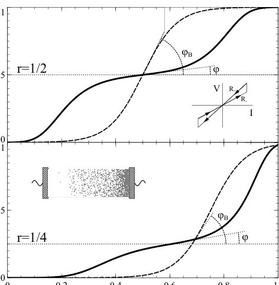
<figcaption class="paper-figure-caption"><b>Fig 1.</b> Figure 1. Stationary vacancy distributions in memristors half-filled with vacancies (r = 1/2, top) and quarter-filled (r = 1/4, bottom) at normalized current strength p = 16; solid lines show distributions at normalized Coulomb energy of vacancies α = 1000, dashed lines at α = 0, corresponding to solutions of the Burgers equation. The insets show: (top right) a typical hysteresis loop of the considered memristor under a square-wave current; (bottom left) an illustration of the random vacancy distribution in the memristor corresponding to the solid line in the figure. The derivative scaling factor is defined in the text as υ = tan φ/ tan φB.</figcaption>
</figure>
<figure class="paper-figure-card">
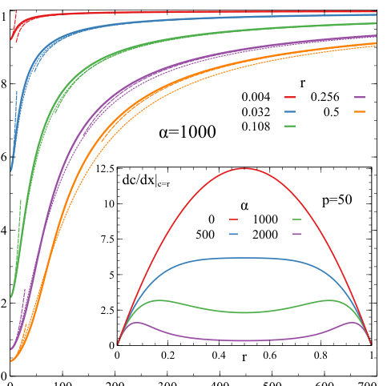
<figcaption class="paper-figure-caption"><b>Fig 2.</b> Figure 2. Derivative scaling factor s as a function of the reduced current strength p in memristors with different vacancy fillings at α = 1000. The curves for fillings r and 1−r coincide. The inset shows the dependence of the derivative of the vacancy distribution profile dc/ dx at the point c = r as a function of the memristor filling factor r at p = 50.</figcaption>
</figure>
</div>

<p><strong>Summary.</strong> This work provides an analytical solution for the stationary state of a memristor model incorporating mobile charged vacancies and their electrostatic interactions. By linearizing the governing equations, the authors derive expressions for vacancy profiles and demonstrate that the device's limiting resistance is robustly independent of the interaction strength in the leading order approximation.</p>
<p><strong>Why it may be interesting.</strong> While this is condensed matter physics (memristors), the mathematical techniques—linearization of non-local PDEs, use of integral invariants, and analysis in limiting regimes ($p 	o 0, p 	o \infty$)—are highly relevant to theoretical studies of complex many-body dynamics or open quantum systems.</p>
<details>
<summary>Detailed structure</summary>
<p><strong>Main problem.</strong> The primary goal is to find analytical expressions for the stationary (limiting) vacancy distributions within a closed memristor model that incorporates long-range electrostatic interactions between mobile charged vacancies.</p>
<p><strong>Main result.</strong> Despite the inclusion of strong electrostatic interaction, the limiting resistances in both 'on' and 'off' states remain independent of the interaction strength ($\alpha$) at leading order.</p>
<p><strong>Method.</strong> The analysis focuses on solving the steady-state condition ($J=0$) by linearizing the governing non-linear partial differential equations using a logit transformation ($\Lambda = \log(c/(1-c))$) and solving the resulting equation via quadrature integration.</p>
<p><strong>Model / system.</strong> The system is a one-dimensional memristor containing mobile charged vacancies. The dynamics are governed by a continuity equation coupled with Poisson's equation, modeling charge transport influenced by vacancy concentration $C(x)$ and an electric potential $\Phi$.</p>
<p><strong>Key observables.</strong> Stationary vacancy distributions $c(x)$, limiting resistances in 'on'/'off' states, and the derivative scaling factor $\upsilon$.</p>
<p><strong>Important parameters / regimes.</strong> Electrostatic interaction strength ($\alpha$), applied current density ($p$), and filling factor ($r$). The analysis explores limits like $p \ll 1$ and $p \gg 1$.</p>
<p><strong>Assumptions / limitations.</strong> The full kinetic equation is too complex, necessitating the focus on stationary states ($J=0$). Results regarding resistance independence hold only in the leading linear order of vacancy concentration.</p>
<p><strong>Figures summary.</strong> Figure 2 illustrates the dependence of the derivative scaling factor $\upsilon$ on reduced current strength $p$ for various fillings and interaction strengths ($\alpha$), showing symmetry around half-filling.</p>
<p><strong>Paper structure.</strong> The paper establishes the governing equations (continuity, Poisson) and then simplifies them to stationary state forms. It employs a logit transformation to linearize the system, leading to an equation solved via quadrature integration involving two constants ($\Lambda_0$ and $\upsilon$). Finally, asymptotic expansions for $\upsilon$ are derived.</p>
</details>
<details>
<summary>Abstract</summary>
<p>A nonlinear model of a memristor based on charged mobile vacancies is considered taking into account the electrostatic interaction between them. This interaction significantly affects the stationary (limiting) vacancy distributions formed under the action of the electric current flowing through the memristor, for which analytical expressions are obtained in this work. Between the regions with reduced and increased vacancy concentrations, an intermediate electrically neutral region is formed due to the electrostatic interaction. Interestingly, the limiting resistances in the <code>on'' and</code>off'' states of such a memristor do not depend on the strength of the electrostatic interaction, at least in the leading first order in the vacancy concentration.</p>
</details>
<p><sub><a href="#top">↑ back to top</a></sub></p>

<p><a id="paper-2608.11331"></a></p>
<h3 id="light-induced-superconducting-diode-effect-in-patterned-films"><a href="http://arxiv.org/abs/2608.11331v1">Light induced superconducting diode effect in patterned films</a></h3>
<p><strong>Authors:</strong> Evan M. Wilson, Hou-Tong Chen, Alexander V. Balatsky<br>
<strong>Type:</strong> theory · <strong>Category:</strong> other · <strong>PDF:</strong> <a href="https://arxiv.org/pdf/2608.11331v1">https://arxiv.org/pdf/2608.11331v1</a><br>
<strong>Analysis basis:</strong> full PDF text, analyzed in chunks
<strong>Topic relevance:</strong> <code>driven-dissipative phase transition</code> <strong>3/5</strong> · <code>interference shaping light</code> <strong>3/5</strong> · <code>methods for driven-dissipative</code> <strong>3/5</strong> · <code>Keldysh / 2PI / non-Gaussian methods</code> <strong>2/5</strong> · <code>non-equilibrium universality</code> <strong>2/5</strong> · <code>analog quantum simulation</code> <strong>1/5</strong> · <code>correlated / nonlocal dissipation</code> <strong>1/5</strong> · <code>quantum measurements</code> <strong>1/5</strong></p>
<div class="figure-strip-hint">↔ Scroll figures horizontally</div>
<div class="paper-figures-scroll">
<figure class="paper-figure-card">
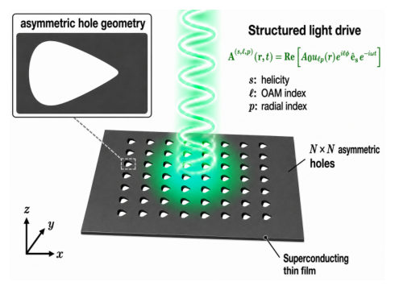
<figcaption class="paper-figure-caption"><b>Fig 1.</b> FIG. 1. A superconducting film patterned with an Nx × Ny array of asymmetric holes is illuminated by a structured optical beam. The drive is described by a vector potential A(s,ℓ,p)(r, t), where s denotes helicity, ℓthe orbital angular momentum index, and p the radial index. The induced condensate dynamics are modeled using the time-dependent Ginzburg–Landau equation, with the supercurrent density js determined by the gauge-covariant phase gradients of the superconducting order parameter.</figcaption>
</figure>
<figure class="paper-figure-card">
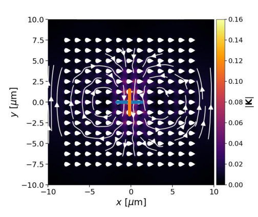
<figcaption class="paper-figure-caption"><b>Fig 2.</b> FIG. 2. Optically induced sheet-current texture in the 169-hole superconducting metacrystal for the continuous linearly polarized Gaussian drive, (s, ℓ, p) = (0, 0, 0). The color scale shows the magnitude of the induced current, and the horizontal and vertical central cuts mark the internal channels used to compare left-right and up-down current flow. The asymmetric hole array redirects the driven current into components parallel and perpendicular to the driving electric field, enabling a zero-bias directional current imbalance. Video simulations for all optical modes are available on the companion website [32].</figcaption>
</figure>
<figure class="paper-figure-card">
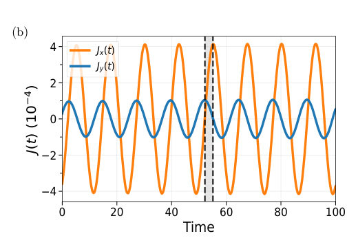
<figcaption class="paper-figure-caption"><b>Fig 3.</b> FIG. 3. Time-dependent zero-bias current imbalance and local phase mixing in the 169-hole superconducting metacrystal under continuous linearly polarized Gaussian illumination, (s, ℓ, p) = (0, 0, 0). Panel (a) shows the instantaneous left–right and up–down diode-like coefficients, ηLR and ηUD, obtained from opposite central line-cut currents. The instantaneous coefficients are plotted as dimensionless ratios, so η = 0.10 corresponds to 10%; Table I reports the cycle-averaged values in percent. The asymmetric peaks over an optical cycle produce a finite cycle-averaged directional imbalance. Panel (b) shows representative local current components Jx(t) and Jy(t) inside the patterned region....</figcaption>
</figure>
<figure class="paper-figure-card">
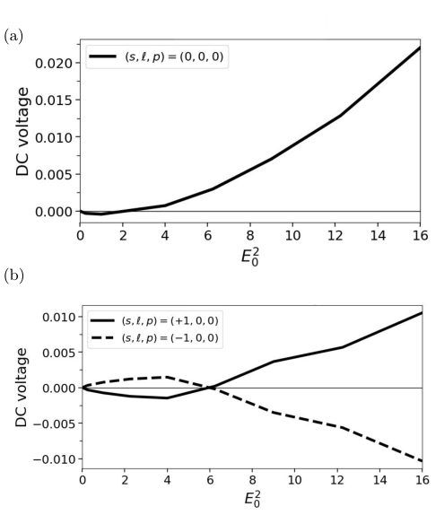
<figcaption class="paper-figure-caption"><b>Fig 4.</b> FIG. 4. (a) For Gaussian linear polarization, (s, ℓ, p) = (0, 0, 0), the dc voltage shows nonlinear rectification as a function of the optical intensity proxy E2 0. The response includes a sign change at low intensity and higher-order nonlinearity. (b) Circularly polarized beams with opposite optical helicities, (s, ℓ, p) = (+1, 0, 0) and (−1, 0, 0), separate into opposite-sign voltage branches that both change sign, showing helicity-sensitive rectification.</figcaption>
</figure>
<figure class="paper-figure-card">
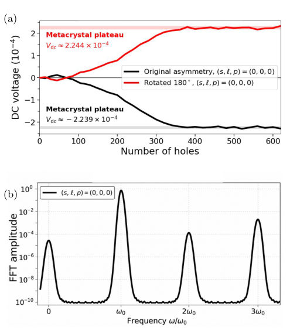
<figcaption class="paper-figure-caption"><b>Fig 5.</b> FIG. 5. Geometry dependence and harmonic content of the optically rectified voltage for the linearly polarized Gaussian drive, (s, ℓ, p) = (0, 0, 0). Panel (a) shows the dc voltage as the number of asymmetric holes is increased for the original hole orientation and for the 180◦-rotated geometry. The voltage grows with hole number and approaches a metacrystal plateau, while rotating the holes reverses the sign of the response, showing that the diode polarity is set by the broken spatial symmetry of the hole array. Panel (b) shows the Fourier spectrum of the voltage response for the 169-hole metacrystal. The spectrum contains a finite dc component together with peaks at 2ω0, and 3ω0,...</figcaption>
</figure>
</div>

<p><strong>Summary.</strong> The research shows that patterned superconducting films act as superconducting diodes when illuminated by structured light. By exploiting the geometric asymmetry of holes (metacrystals), the system generates a directional supercurrent imbalance and measurable photovoltage even without external bias. This establishes a powerful, non-invasive method for controlling superconducting transport using optical fields.</p>
<p><strong>Why it may be interesting.</strong> This work bridges quantum electrodynamics/optics with superconductivity, showing how engineered geometry can induce non-linear, directed transport phenomena using light, which is relevant for understanding coherent control in mesoscopic superconducting circuits.</p>
<details>
<summary>Detailed structure</summary>
<p><strong>Main problem.</strong> The study demonstrates how structured light can induce a superconducting diode response in patterned films without applying a static bias or permanently altering the material.</p>
<p><strong>Main result.</strong> Structured optical driving generates measurable, non-zero directional supercurrent imbalances and rectified photovoltages, establishing patterned superconductors as viable platforms for light-tunable diodes.</p>
<p><strong>Method.</strong> The analysis relies on solving the generalized time-dependent Ginzburg-Landau equation using numerical simulations to model the coherent condensate response.</p>
<p><strong>Model / system.</strong> The physical system is a superconducting film perforated with geometrically asymmetric holes (metacrystals). The dynamics are governed by the TDGL equation, incorporating an optical drive via a time-dependent vector potential.</p>
<p><strong>Key observables.</strong> Rectified dc photovoltages ($V_{dc}$), zero-bias directional supercurrent imbalance ($\eta_{LR}, \eta_{UD}$), and the nonlinear dependence of $V_{dc}$ on optical intensity.</p>
<p><strong>Important parameters / regimes.</strong> The response is highly controlled by the hole array geometry, the helicity ($s$), and orbital angular momentum index ($\ell$) of the incident structured light.</p>
<p><strong>Assumptions / limitations.</strong> The analysis focuses exclusively on the coherent condensate response, neglecting dissipative effects like optical heating or nonequilibrium quasiparticle dynamics.</p>
<p><strong>Figures summary.</strong> Figures illustrate the setup using structured light, show time-dependent current textures revealing chiral flow patterns, and plot $V_{dc}$ vs. intensity to confirm nonlinear rectification.</p>
<p><strong>Paper structure.</strong> The paper systematically analyzes how structural asymmetry interacts with various optical modes (Gaussian, Laguerre-Gaussian) under both continuous and pulsed driving conditions to quantify the resulting directional supercurrent imbalance and photovoltage.</p>
</details>
<details>
<summary>Abstract</summary>
<p>Structured light offers a route to control superconducting transport without permanently modifying the material or applying a static bias. Here we show that structured optical driving can generate a superconducting diode response in patterned superconducting films with asymmetric holes. Using generalized time-dependent Ginzburg Landau simulations, we find that optical driving produces rectified dc photovoltages and zero bias directional supercurrent imbalance in a junction free geometry, with continuous-drive diode efficiencies of order $10^{-3}$ and pulsed efficiencies reaching $10^{-2}$. The response is controlled by both the hole array and the optical mode. Increasing the number of asymmetric holes enhances rectification, reversing circular helicity reverses the diode polarity, and the optical spatial mode strongly modifies the magnitude and polarity of the directional response. Pulsed excitation enhances the zero bias line cut current imbalance to the percent level. For linearly polarized illumination, the asymmetric metacrystal converts the drive into local chiral supercurrent motion, inducing an inverse Faraday effect like mechanism for dynamical time reversal symmetry breaking. These results establish patterned superconducting films as a viable platform for light-tunable superconducting diode behavior.</p>
</details>
<p><sub><a href="#top">↑ back to top</a></sub></p>

<p><a id="paper-2608.11370"></a></p>
<h3 id="false-vacuum-bubbles-in-sphaleron-scattering"><a href="http://arxiv.org/abs/2608.11370v1">False-vacuum bubbles in sphaleron scattering</a></h3>
<p><strong>Authors:</strong> Manuel A. Martínez Sánchez, Christoph Adam, Danial Saadatmand<br>
<strong>Type:</strong> theory · <strong>Category:</strong> statistical mechanics · <strong>PDF:</strong> <a href="https://arxiv.org/pdf/2608.11370v1">https://arxiv.org/pdf/2608.11370v1</a><br>
<strong>Analysis basis:</strong> full PDF text, analyzed in chunks
<strong>Topic relevance:</strong> <code>driven-dissipative phase transition</code> <strong>3/5</strong> · <code>non-equilibrium universality</code> <strong>3/5</strong> · <code>Frenkel-Kontorova</code> <strong>2/5</strong> · <code>Keldysh / 2PI / non-Gaussian methods</code> <strong>2/5</strong> · <code>methods for driven-dissipative</code> <strong>2/5</strong> · <code>analog quantum simulation</code> <strong>1/5</strong> · <code>correlated / nonlocal dissipation</code> <strong>1/5</strong> · <code>scars &amp; prethermalization</code> <strong>1/5</strong></p>
<div class="figure-strip-hint">↔ Scroll figures horizontally</div>
<div class="paper-figures-scroll">
<figure class="paper-figure-card">
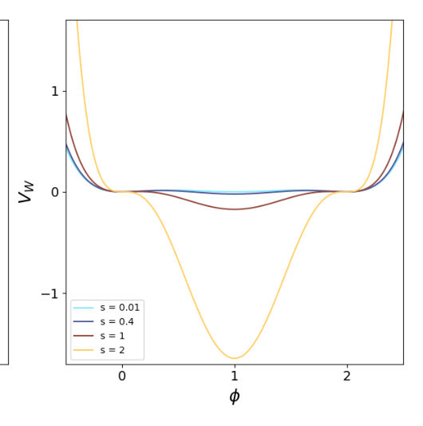
<figcaption class="paper-figure-caption"><b>Fig 1.</b> FIG. 1: Barrier (left) and well (right) potentials for different values of s.</figcaption>
</figure>
<figure class="paper-figure-card">
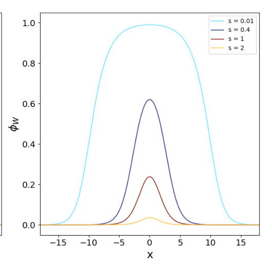
<figcaption class="paper-figure-caption"><b>Fig 2.</b> FIG. 2: Sphaleron profiles in the barrier model (left) and the well model (right) for different values of s.</figcaption>
</figure>
<figure class="paper-figure-card">
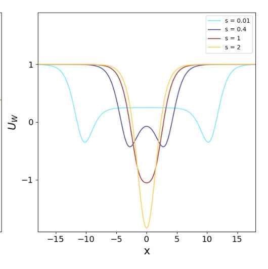
<figcaption class="paper-figure-caption"><b>Fig 3.</b> FIG. 3: Quantum potentials for the sphalerons represented in Fig. 2</figcaption>
</figure>
<figure class="paper-figure-card">
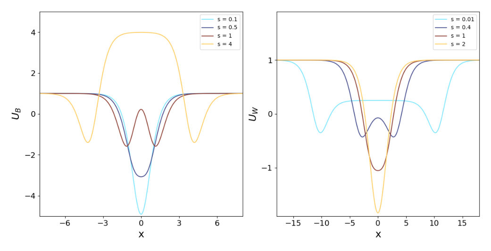
<figcaption class="paper-figure-caption"><b>Fig 4.</b> Fig. 3 shows the quantum mechanical potentials for the aforementioned models. In the left panel, which corresponds to the barrier model, the effective potential develops a barrier at its center for large values of s. This can be explained by the fact that the sphaleron resembles a kink–antikink pair in the standard ϕ6 model at this limit. Such a pair is known not to possess a shape mode [30]. The spectrum of the barrier model is shown in Fig. 4 as a function of the parameter s. It can be seen that the linear spectrum contains no bound states other than the zero mode and the unstable negative mode. The magnitude of the unstable mode increases with increasing s, indicating that the sphalerons...</figcaption>
</figure>
<figure class="paper-figure-card">
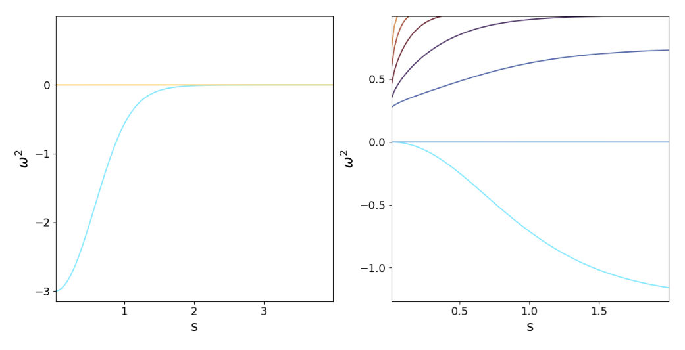
<figcaption class="paper-figure-caption"><b>Fig 5.</b> FIG. 4: Eigenvalues for the bound, zero and unstable modes in the barrier (left) and well (right) models. In both cases the continuum threshold is at ω2 = 1.</figcaption>
</figure>
</div>

<p><strong>Summary.</strong> This paper analyzes how two localized, unstable field configurations called sphalerons collide in a scalar field theory with false vacua. Using numerical simulations, the authors demonstrate that these collisions lead to highly complex outcomes, including the transient formation of metastable vacuum bubbles. This reveals richer dynamics than previously understood for such systems.</p>
<p><strong>Why it may be interesting.</strong> The study explores non-equilibrium dynamics far from equilibrium (vacuum decay/field evolution), which shares conceptual links with phase transitions and domain wall dynamics studied in statistical mechanics.</p>
<details>
<summary>Detailed structure</summary>
<p><strong>Main problem.</strong> The study investigates the complex collision dynamics of bright sphalerons within a $(1+1)$-dimensional deformed $\phi^6$ scalar field theory that possesses false vacua.</p>
<p><strong>Main result.</strong> The collisions exhibit rich final states, most notably the dynamic formation of long-lived bubbles of the false vacuum bounded by kink-antikink pairs, which repeatedly collapse and re-expand before decaying.</p>
<p><strong>Method.</strong> The research combines linear stability analysis to characterize sphaleron properties with extensive numerical simulations to track the nonlinear time evolution following head-on collisions.</p>
<p><strong>Model / system.</strong> The system is a $(1+1)$-dimensional real scalar field theory governed by a deformed $\phi^6$ potential, analyzed using two specific realizations: the barrier model and the well model. Sphalerons are non-topological solitary wave solutions existing in these metastable vacuum backgrounds.</p>
<p><strong>Key observables.</strong> Final states (kink-antikink pairs, oscillons), bubble formation/decay dynamics, sphaleron lifetime ($  au$), and oscillation frequencies ($\omega$).</p>
<p><strong>Important parameters / regimes.</strong> The deformation parameter ($s$) of the potential and the initial collision velocities are crucial parameters governing the outcome.</p>
<p><strong>Assumptions / limitations.</strong> The analysis assumes that collisions occur when the intrinsic instability decay rate is slow enough to allow for a measurable interaction time. The initial two-sphaleron configuration used for simulation is an approximation.</p>
<p><strong>Figures summary.</strong> Figures illustrate potential energy landscapes (barrier vs. well), sphaleron profiles, quantum potentials, eigenvalue spectra, and phase diagrams mapping out various final states resulting from collisions.</p>
<p><strong>Paper structure.</strong> The paper first reviews the static properties and linear instabilities of the sphalerons in both vacuum models. It then proceeds to numerically simulate head-on collisions across parameter space, mapping out the resultant stable or transient field configurations.</p>
</details>
<details>
<summary>Abstract</summary>
<p>We investigate the collision dynamics of two bright sphalerons in a (1+1)-dimensional deformed $φ^6$ scalar field theory with a symmetric potential possessing false vacua. Two one-parameter realizations of the model, referred to as the barrier and well models, are considered and their static and linear instability properties are first reviewed. We then study head-on collisions of boosted sphalerons over a broad range of initial velocities and deformation parameters. The scattering dynamics exhibit a rich variety of final states, including the production of kink-antikink pairs, long-lived oscillons in true and false vacuum, multiple oscillons propagating in false-vacuum regions, and radiative decay. A particularly remarkable outcome is the emergence of a long-lived bubble of the false broken vacuum bounded by a kink-antikink pair, which repeatedly collapses and re-expands before eventually decaying into an oscillon. These results demonstrate that deformed $φ^6$ theories with false vacua exhibit considerably richer sphaleron dynamics than previously known and provide new insight into the role of unstable localized configurations in nonlinear field theories.</p>
</details>
<p><sub><a href="#top">↑ back to top</a></sub></p>

<p><a id="paper-2608.12214"></a></p>
<h3 id="electron-transport-in-a-16nm-thick-double-gated-100-silicon-nanosheet-a-theoretical-study-accounting-for-phonon-confinement-and-remote-phonon-scattering"><a href="http://arxiv.org/abs/2608.12214v1">Electron transport in a 1.6~nm-thick double-gated (100) silicon nanosheet: A theoretical study accounting for phonon confinement and remote-phonon scattering</a></h3>
<p><strong>Authors:</strong> Shoaib Mansoori, Bimin Cai, Edward Chen, Dallin O. Nielsen, Massimo V. Fischetti<br>
<strong>Type:</strong> theory · <strong>Category:</strong> other · <strong>PDF:</strong> <a href="https://arxiv.org/pdf/2608.12214v1">https://arxiv.org/pdf/2608.12214v1</a><br>
<strong>Analysis basis:</strong> full PDF text, analyzed in chunks
<strong>Topic relevance:</strong> <code>Keldysh / 2PI / non-Gaussian methods</code> <strong>3/5</strong> · <code>analog quantum simulation</code> <strong>2/5</strong> · <code>correlated / nonlocal dissipation</code> <strong>2/5</strong> · <code>quantum measurements</code> <strong>2/5</strong> · <code>driven-dissipative phase transition</code> <strong>1/5</strong> · <code>methods for driven-dissipative</code> <strong>1/5</strong> · <code>non-equilibrium universality</code> <strong>1/5</strong></p>
<div class="figure-strip-hint">↔ Scroll figures horizontally</div>
<div class="paper-figures-scroll">
<figure class="paper-figure-card">
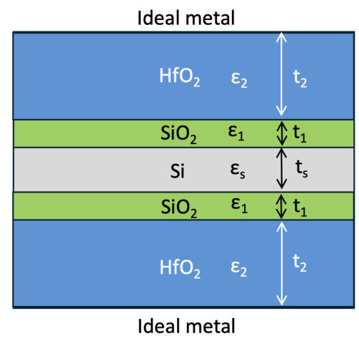
<figcaption class="paper-figure-caption"><b>Fig 1.</b> FIG. 1. Idealized structure of a double-gate field-effect tran- sistor (FET) with a silicon (Si) nanosheet channel, surrounded by SiO2 and HfO2 dielectric layers. The structure includes the labeled dielectric permittivities (ϵ1, ϵ2) and layer thick- nesses (t1, t2,g ts). The specific dimensions considered are t1 ≡tSiO2 = 0.6 nm, t2 ≡tHfO2 =1.2 nm, and silicon nanosheet thickness ts = 1.6 nm. The top and bottom metal gates are considered ideal equipotential metals.</figcaption>
</figure>
<figure class="paper-figure-card">
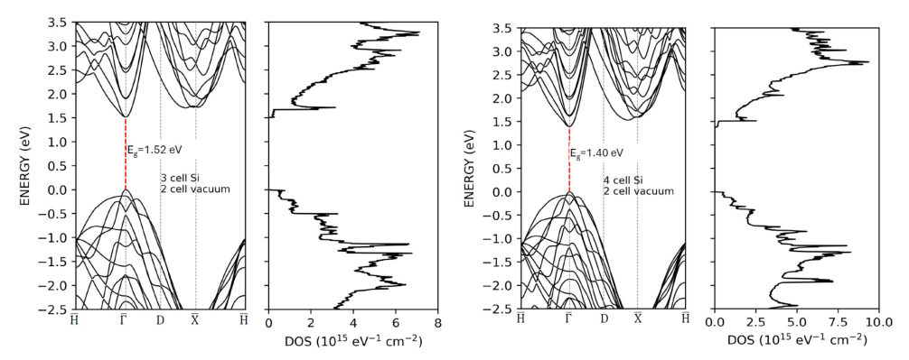
<figcaption class="paper-figure-caption"><b>Fig 2.</b> FIG. 2. Band structure and density of states of the (100) 3-cell (left) and 4-cell (right) H-terminated thick films obtained from empirical pseudopotentials assuming 2 cells of vacuum ’padding’. The bandgap of the 3-cell-thick Si nanosheet,≈1.52 eV, can be viewed as resulting from the ground-state energy of electrons in the conduction band, E0</figcaption>
</figure>
<figure class="paper-figure-card">
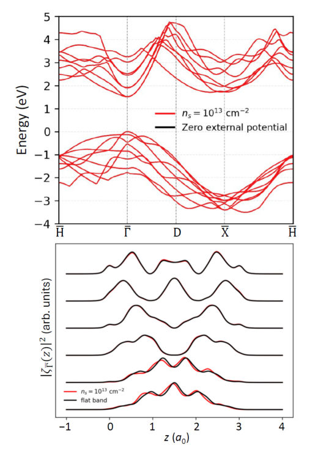
<figcaption class="paper-figure-caption"><b>Fig 3.</b> FIG. 3. Top: Band structure of a 3-cell-thick Si nanosheet in the presence of the parabolic potential given by Eq. (6) (red lines) compared to the band structure at flat bands (black lines). The difference is too small to be visible (the band gap at Γ changes only by about 2 meV, from 1.518 eV to 1.520 eV. Bottom: Squared magnitude of the wavefunctions at the Γ- point in the six lowest-energy subbands both in the presence of the parabolic potential (red lines) and at flat bands (black lines). Note the slight increase of amplitude of the wavefunc- tion in the ground-state subband on the left side and on the right side for the first excited state (almost degenerate) wave- function. The...</figcaption>
</figure>
<figure class="paper-figure-card">
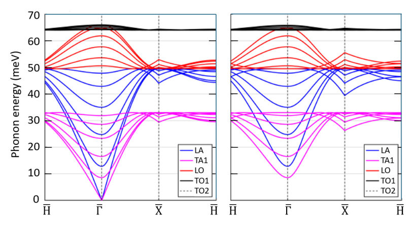
<figcaption class="paper-figure-caption"><b>Fig 4.</b> FIG. 4. Phonon dispersion in a 3-cell thick Si nanosheet with freestanding (left) and clamped (right) boundary conditions, as obtained from the model described by Eqs. (7) and (8) using the values from Ref. [43], also listed in Table II. Although 30 of the 36 branches are shown (not shown are the acoustic shear branches that are decoupled from the electrons), not all branches are visible, since the 6 TO2 (ZO) branches are hidden by the 6 TO1 branches. The labels in the legend, ”LA”, ”TA1”, ”LO”, etc., refer to the bulk modes from which the 2D phonons originate. As stated in the main text, bulk TA phonons correspond to shear or flexural modes, whereas the bulk LA phonons correspond to...</figcaption>
</figure>
<figure class="paper-figure-card">
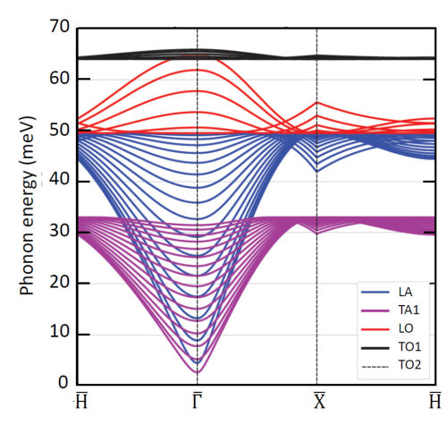
<figcaption class="paper-figure-caption"><b>Fig 5.</b> FIG. 5. As in the center frame of Fig. 4, but considering confinement of the acoustic phonons also in the SiO2 layers assuming clamped boundary conditions at the SiO2/HfO2 in- terfaces using the elastic continuum approximation given by Eqs. (18)-(20). Comparison with the center frame of Fig. 4 shows a smaller ‘zero-point’ energy of the acoustic phonons as well as a larger number of acoustic branches.</figcaption>
</figure>
</div>

<p><strong>Summary.</strong> This theoretical study analyzes electron transport in nanoscale silicon nanosheets by rigorously accounting for phonon confinement and remote-phonon scattering effects. The findings demonstrate that realistic boundary conditions significantly lower predicted mobility, but importantly, the interaction with high-kappa gate dielectrics (via IPPs) does not negatively affect transistor performance, suggesting compatibility for future devices.</p>
<p><strong>Why it may be interesting.</strong> While focused on solid-state device physics rather than fundamental AMO phenomena, the detailed treatment of quantized lattice vibrations (phonons) interacting with confined charge carriers shares mathematical parallels with open quantum systems theory involving coupling to bosonic baths.</p>
<details>
<summary>Detailed structure</summary>
<p><strong>Main problem.</strong> The study theoretically investigates electron transport in an ultra-thin silicon nanosheet, focusing on how phonon confinement and interface hybrid plasmon-phonon excitations (IPPs) affect device performance.</p>
<p><strong>Main result.</strong> Realistic boundary conditions for phonons significantly reduce the predicted room temperature mobility compared to bulk approximations. Crucially, IPP scattering is found not to negatively impact FET performance, potentially increasing the saturated velocity by cooling the electrons.</p>
<p><strong>Method.</strong> The authors employed a combination of methods including calculating band structures using pseudopotentials and solving eigenvalue equations derived from continuum models for phonon confinement and dielectric continuum limits for IPPs.</p>
<p><strong>Model / system.</strong> The system is a double-gated (100) silicon nanosheet with a thickness of 1.6 nm, featuring $    ext{SiO}_2/ ext{HfO}_2$ gate stacks. The model incorporates quantum confinement effects on both electron wavefunctions and phonon dispersion relations.</p>
<p><strong>Key observables.</strong> Electron mobility ($\mu$), high-field saturated velocity, and the influence of various scattering mechanisms (phonon confinement, IPP scattering).</p>
<p><strong>Important parameters / regimes.</strong> Nanosheet thickness ($t_s = 1.6$ nm), room temperature, gate dielectric materials ($    ext{SiO}_2$, $  ext{HfO}_2$), and boundary conditions for phonons.</p>
<p><strong>Assumptions / limitations.</strong> The analysis uses an approximated elastic continuum model for acoustic phonons and the dielectric continuum limit for IPPs; it neglects extrinsic scattering sources like interface roughness or charged defects.</p>
<p><strong>Figures summary.</strong> Figure 3 (mentioned in notes) compares band structures calculated with parabolic vs. flat potential profiles, confirming small bandgap changes due to gate bias variations.</p>
<p><strong>Paper structure.</strong> The paper proceeds by defining the physical system and Hamiltonian, detailing the methods for calculating electronic subbands under confinement, modeling phonon interactions via boundary conditions, analyzing the impact of IPPs, and concluding with performance implications for high-kappa materials.</p>
</details>
<details>
<summary>Abstract</summary>
<p>We study theoretically electron transport in an top-and bottom-gated (100) 1.6 nm-thin silicon nanosheet with SiO2/HfO2 gate stacks, focusing on the intrinsic physical processes that affect transport: the confinement of phonons and the presence of interface hybrid plasmon-phonon excitations (IPPs or <code>remote phonons'). The band structure is calculated using local empirical pseudopotentials; an approximated elastic continuum model is used to consider the confinement of acoustic phonons; the dielectric continuum limit is used to deal with the IPPs. We find that the electron mobility is affected significantly by the boundary conditions chosen to deal with phonon confinement. The more realistic assumption of phonons clamped at the SiO2/HfO2 interfaces and optical phonons at the Si/SiO2 interfaces results in a room temperature mobility much smaller than what is obtained using the common assumption of bulk phonons in the elastic, high-temperature approximation. We also find that, as a result of the complicated structure of the primed subbands, the high-field saturated velocity is significantly lower than its bulk value, as it had been measured in the past in the case of Si inversion layers but never explained theoretically. Finally, we find that IPP scattering does depress the low-field mobility but to a small extent, thanks to the presence of the interfacial SiO2 layers and to the proximity of the metal gates. Moreover, by keeping electrons</code>cooler', IPP scattering results in a higher saturated velocity. Therefore, the presence of high-kappa materials in the gate-insulator stacks should not affect negatively the performance of field effect transistors based on Si nanosheets.</p>
</details>
<p><sub><a href="#top">↑ back to top</a></sub></p>

<p><a id="paper-2608.12105"></a></p>
<h3 id="beam-routing-through-excitons-in-transition-metal-dichalcogenide-monolayers"><a href="http://arxiv.org/abs/2608.12105v1">Beam Routing through Excitons in Transition Metal Dichalcogenide Monolayers</a></h3>
<p><strong>Authors:</strong> Yonas Lebsir, Jacob Terndrup Heiden, Jorge Barcia Rodríguez, Maria Papadopoulou, Kenji Watanabe, Takashi Taniguchi, N. Asger Mortensen, Sergii Morozov, Nicolas Ubrig<br>
<strong>Type:</strong> experiment · <strong>Category:</strong> other · <strong>PDF:</strong> <a href="https://arxiv.org/pdf/2608.12105v1">https://arxiv.org/pdf/2608.12105v1</a><br>
<strong>Analysis basis:</strong> full PDF text, analyzed in chunks
<strong>Topic relevance:</strong> <code>interference shaping light</code> <strong>3/5</strong> · <code>quantum optics experiment</code> <strong>3/5</strong> · <code>driven-dissipative phase transition</code> <strong>2/5</strong> · <code>analog quantum simulation</code> <strong>1/5</strong> · <code>correlated / nonlocal dissipation</code> <strong>1/5</strong> · <code>quantum measurements</code> <strong>1/5</strong></p>
<div class="figure-strip-hint">↔ Scroll figures horizontally</div>
<div class="paper-figures-scroll">
<figure class="paper-figure-card">
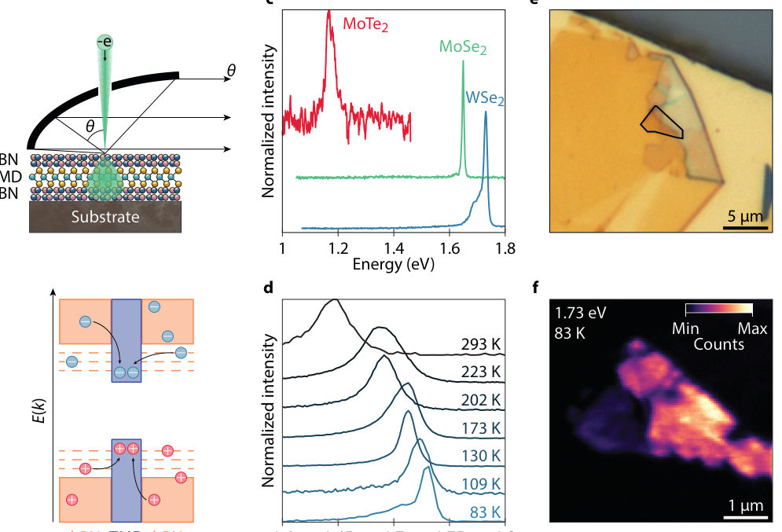
<figcaption class="paper-figure-caption"><b>Fig 1.</b> FIG. 1. Demonstration of electron-beam induced light emission from monolayer TMDs. a. Schematic of the experimental setup, consisting of a focused electron beam with an accelerating voltage of 5–30 kV and beam currents of 1 nA, focused through a hole in a parabolic mirror with numerical aperture NA = 0.97. The collected light is sent to a spectrometer that resolves the emission energy and angle. b. Band diagram illustrating incoherent cathodoluminescence in hBN-encapsulated monolayer TMDs. Electrons and holes are primarily generated in the hBN and relax toward the local band extrema of the TMD, where they form excitons. c. Measured cathodoluminescence spectra at base temperature of hBN...</figcaption>
</figure>
<figure class="paper-figure-card">
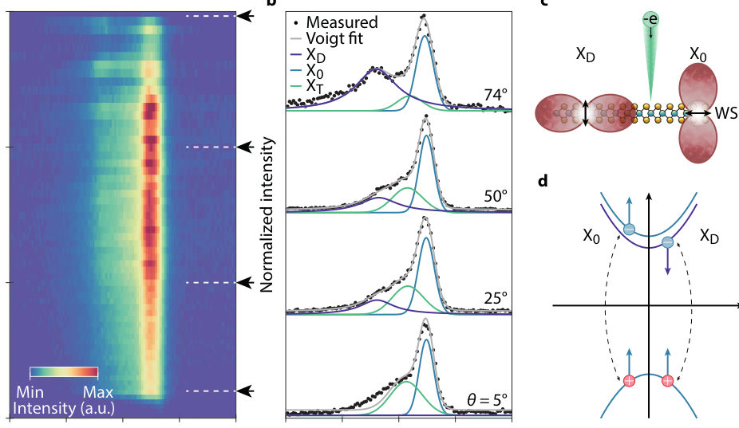
<figcaption class="paper-figure-caption"><b>Fig 2.</b> FIG. 2. Spectral signatures of dark excitons in cathodoluminescence. a. False-color map of the measured cathodoluminescence intensity, recorded at 83 K on a gold substrate, as a function of emission energy and angle. The dominant emission centered at 1.73 eV originates from the neutral exciton with an in-plane transition dipole. At larger emission angles, a second spectral feature appears, which we attribute to the dark exciton with an out-of-plane transition dipole. b. Cathodoluminescence spectra recorded at the selected emission angles indicated in panel a (black circles; curves offset for clarity). Solid lines show the fits of the individual excitonic contributions, including the neutral...</figcaption>
</figure>
<figure class="paper-figure-card">
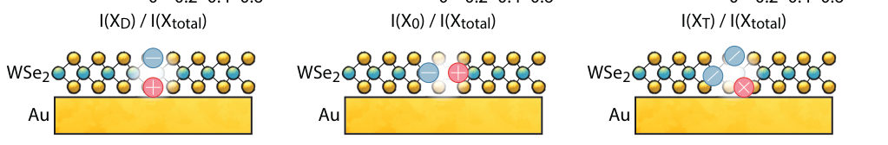
<figcaption class="paper-figure-caption"><b>Fig 3.</b> FIG. 3. Angular emission profile of distinct exciton species. a. Polar plot of the dark exciton emission profile (XD, purple circles). The radial coordinate represents the normalized intensity, I(XD)/I(Xtotal), with the normalization used to account for the instrument response, as described in the main text. The dashed line shows a simplified simulation of the emission pattern of the structure shown below, where the hBN layers are omitted for clarity but included in the calculation, confirming the predominantly out-of-plane character of the emission. The gray shaded area indicates the cutoff angle of the parabolic mirror. b. Same as in a, but for the neutral exciton (X0, blue circles) with...</figcaption>
</figure>
<figure class="paper-figure-card">
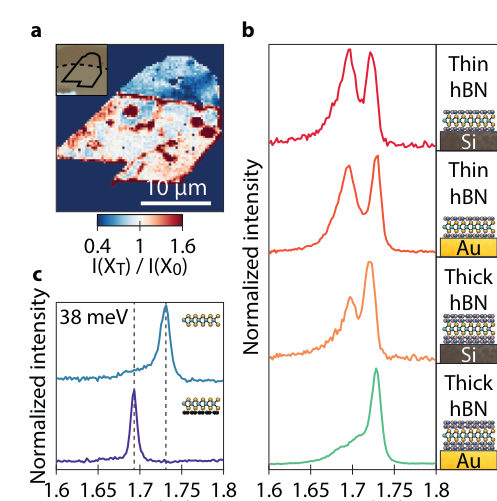
<figcaption class="paper-figure-caption"><b>Fig 4.</b> FIG. 4. hBN thickness dependency. a. Cathodoluminescence false-color map, recorded at 83 K, of the trion-exciton intensity ratio in a sample where the same WSe2 is placed on top of two distinct hBN thicknesses (≈20 and 50 nm). The inset displays an optical micrograph of the sample with a black outline of the monolayer. The intensity ratio clearly correlates with the hBN thicknesses. b. Cathodo- luminescence spectra of different samples (sketched on the right next to each respective spectrum) with varying hBN thicknesses and sub- strates. Every spectrum is normalized with respect to its own max- imum. c. Maximum normalized cathodoluminescence spectra of a WSe2 monolayer encapsulated in hBN,...</figcaption>
</figure>
</div>

<p><strong>Summary.</strong> The research shows that light beam routing at the nanoscale can be achieved intrinsically within TMD monolayers without needing external nanostructures. By using angle-resolved cathodoluminescence, the authors prove that the dark exciton possesses an out-of-plane dipole moment, causing it to emit directionally at large angles relative to the surface normal.</p>
<p><strong>Why it may be interesting.</strong> This work demonstrates a solid-state platform for controlling photon emission directionality purely through quantum mechanical selection rules (dipole orientation), which is highly relevant for integrated photonic devices and open quantum systems engineering.</p>
<details>
<summary>Detailed structure</summary>
<p><strong>Main problem.</strong> To achieve nanoscale beam routing of light without relying on external nanostructuring elements.</p>
<p><strong>Main result.</strong> The intrinsic excitonic transitions within TMD monolayers, particularly the dark exciton, can produce highly directional emission channels at large angles.</p>
<p><strong>Method.</strong> Low-temperature, angle-resolved cathodoluminescence spectroscopy is used to probe and distinguish between different excitonic species based on their angular emission profiles.</p>
<p><strong>Model / system.</strong> The study focuses on monolayer Transition Metal Dichalcogenides ($  ext{WSe}_2$, $  ext{MoSe}_2$, $ ext{MoTe}_2$), which host distinct excitonic species: bright exciton, trion, and dark exciton. These species possess different transition dipole orientations (in-plane vs. out-of-plane).</p>
<p><strong>Key observables.</strong> Emission energy, emission angle ($ heta$), and the relative intensity of $ ext{X}^0$, $    ext{X}_T$, and $    ext{X}_D$ as a function of collection angle.</p>
<p><strong>Important parameters / regimes.</strong> Low temperature (down to 83 K), local dielectric environment, and the presence/thickness of encapsulating layers like hBN or graphene.</p>
<p><strong>Assumptions / limitations.</strong> The analysis assumes that the distinct angular emission profiles are solely determined by the orientation of the respective excitonic transition dipoles.</p>
<p><strong>Figures summary.</strong> Figures illustrate the experimental setup, band diagrams, and measured spectra showing how $   ext{X}_D$ appears at large angles due to its out-of-plane dipole, while $   ext{X}^0$ and $ ext{X}_T$ peak near the surface normal.</p>
<p><strong>Paper structure.</strong> The paper establishes the problem of nanoscale light routing, details the use of TMDs with multiple excitonic species, presents experimental measurements using angle-resolved CL to map out dipole orientations, and concludes that intrinsic material properties can achieve directional emission.</p>
</details>
<details>
<summary>Abstract</summary>
<p>Routing light at the nanoscale typically relies on nanostructured surfaces to imprint directionality on the emission. Using low-temperature, angle-resolved cathodoluminescence spectroscopy, we show that the intrinsic excitonic transitions of a semiconductor can themselves produce routed emission. We probe monolayers of WSe$_2$, MoSe$_2$, and MoTe$_2$ and resolve the excitonic species of monolayer WSe$_2$ -- the bright exciton, the trion, and the spin-forbidden dark exciton -- through their distinct angular emission profiles. While the in-plane transition dipoles of the bright exciton and trion radiate predominantly toward the surface normal, the out-of-plane dipole of the dark exciton, inaccessible under normal-incidence optical excitation, produces a directional emission channel at large angles. We further tune the balance between neutral and charged exciton emission through the local dielectric environment. Our results establish dark excitons in TMD monolayers as a platform for directional light emission in compact photonic architectures without additional nanostructuring.</p>
</details>
<p><sub><a href="#top">↑ back to top</a></sub></p>

<p><a id="paper-2608.11610"></a></p>
<h3 id="acoustic-plasmon-resonance-breaking-the-anderson-stiffness-paradigm-in-quasi-two-dimensional-superconducting-films"><a href="http://arxiv.org/abs/2608.11610v1">Acoustic Plasmon Resonance: Breaking the Anderson Stiffness Paradigm in Quasi-Two-Dimensional Superconducting Films</a></h3>
<p><strong>Authors:</strong> V. M. Kovalev, A. V. Chaplik<br>
<strong>Type:</strong> theory · <strong>Category:</strong> other · <strong>PDF:</strong> <a href="https://arxiv.org/pdf/2608.11610v1">https://arxiv.org/pdf/2608.11610v1</a><br>
<strong>Analysis basis:</strong> full PDF text, analyzed in chunks
<strong>Topic relevance:</strong> <code>Keldysh / 2PI / non-Gaussian methods</code> <strong>3/5</strong> · <code>driven-dissipative phase transition</code> <strong>2/5</strong> · <code>methods for driven-dissipative</code> <strong>2/5</strong> · <code>correlated / nonlocal dissipation</code> <strong>1/5</strong> · <code>quantum measurements</code> <strong>1/5</strong></p>
<div class="figure-strip-hint">↔ Scroll figures horizontally</div>
<div class="paper-figures-scroll">
<figure class="paper-figure-card">
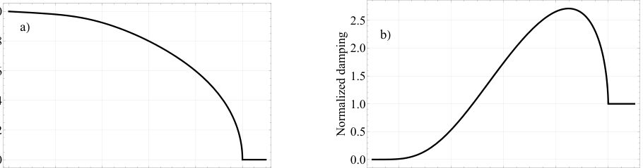
<figcaption class="paper-figure-caption"><b>Fig 1.</b> FIG. 1. Acoustic mode properties as a function of temperature in the dirty regime. (a) Temperature dependence of the normalized acoustic mode dispersion, ωk(T)/ωk(0), versus the reduced temperature, T/Tc. (b) Temperature dependence of the normalized acoustic mode damping, Γ(T)/Γ(Tc), versus the reduced temperature, T/Tc. The phenomenological relation</figcaption>
</figure>
</div>

<p><strong>Summary.</strong> The paper introduces a microscopic theory explaining an acoustic plasmon resonance observed in thin superconducting films. It shows this mode arises from the transverse redistribution of charge densities across the film thickness, bypassing limitations of older models like the Carlson-Goldman scenario. The resulting theoretical predictions for the mode's dispersion and temperature scaling align remarkably well with recent experimental findings.</p>
<p><strong>Why it may be interesting.</strong> This work provides a detailed theoretical mechanism for observing collective excitations in superconductors that are otherwise predicted to be invisible or insensitive to superconductivity, connecting fundamental quantum many-body physics to measurable electromagnetic responses.</p>
<details>
<summary>Detailed structure</summary>
<p><strong>Main problem.</strong> The paper addresses an observed acoustic plasmon mode in superconducting films that critically depends on the superconducting transition temperature, challenging the conventional Anderson-Higgs paradigm.</p>
<p><strong>Main result.</strong> A microscopic theory was developed showing that transverse charge redistribution across finite thickness allows for a unique coupling mechanism to EM radiation, predicting an acoustic mode whose dispersion and temperature scaling match experiments.</p>
<p><strong>Method.</strong> The authors employed a microscopic kinetic theory approach, linearizing the kinetic equation and using Poisson's equation to derive polarization operators for normal and superfluid components.</p>
<p><strong>Model / system.</strong> The system is quasi-two-dimensional superconducting films of finite thickness (d), involving both normal and superfluid charge densities. The model incorporates effects from both clean and dirty transport regimes.</p>
<p><strong>Key observables.</strong> Acoustic plasmon mode frequency ($\omega_k$), damping rate ($\Gamma$), phase velocity ($s$), and their dependence on temperature ($T$) and film thickness ($d$).</p>
<p><strong>Important parameters / regimes.</strong> Superconducting gap ($\Delta$), film thickness ($d$), temperature relative to $T_c$, and the ratio of mean free path to coherence length ($l/\xi_0$).</p>
<p><strong>Assumptions / limitations.</strong> The theory assumes global charge conservation and is most accurate in the low-frequency, overdamped regime ($\omega	au \ll 1$).</p>
<p><strong>Figures summary.</strong> Figure 1 illustrates the temperature dependence of the normalized acoustic mode dispersion and damping rate in the dirty regime, confirming predicted scaling laws.</p>
<p><strong>Paper structure.</strong> The paper builds from identifying the conflict with established theory (Anderson-Higgs) to developing a microscopic kinetic framework. It derives general dispersion relations using polarization operators, analyzes different transport limits (clean/dirty), and finally presents results matching experimental observations regarding thickness and temperature dependence.</p>
</details>
<details>
<summary>Abstract</summary>
<p>Recent experiments on superconducting films have revealed an acoustic plasmon mode that depends critically on the superconducting transition, directly challenging the long-standing Anderson-Higgs paradigm regarding the stiffness of the plasma spectrum in superconductors. In this Letter, we provide a microscopic theoretical framework that explains this behavior and establishes the physical conditions under which classical Anderson-Higgs constraints are bypassed. We demonstrate that in films of finite thickness, the transverse redistribution of normal and superfluid charge densities enables a unique coupling mechanism to electromagnetic radiation - a feature fundamentally absent in the conventional Carlson-Goldman scenario. Our theory predicts an acoustic mode whose dispersion, temperature scaling, and dependence on film thickness are in remarkable agreement with recent experimental observations. By delineating the regime of this acoustic response, we reconcile the observed electromagnetic activity of collective excitations with the fundamental principles of superconductivity.</p>
</details>
<p><sub><a href="#top">↑ back to top</a></sub></p>

<p><a id="paper-2608.12152"></a></p>
<h3 id="the-electrical-transport-of-intrinsic-two-dimensional-ferroelectric-metal-ptbi2"><a href="http://arxiv.org/abs/2608.12152v1">The electrical transport of intrinsic two-dimensional ferroelectric metal PtBi2</a></h3>
<p><strong>Authors:</strong> Dan Li, Liu Yang, Lei Li<br>
<strong>Type:</strong> theory · <strong>Category:</strong> other · <strong>PDF:</strong> <a href="https://arxiv.org/pdf/2608.12152v1">https://arxiv.org/pdf/2608.12152v1</a><br>
<strong>Analysis basis:</strong> full PDF text, analyzed in chunks
<strong>Topic relevance:</strong> <code>Keldysh / 2PI / non-Gaussian methods</code> <strong>3/5</strong> · <code>quantum measurements</code> <strong>2/5</strong> · <code>analog quantum simulation</code> <strong>1/5</strong> · <code>driven-dissipative phase transition</code> <strong>1/5</strong> · <code>methods for driven-dissipative</code> <strong>1/5</strong> · <code>non-equilibrium universality</code> <strong>1/5</strong></p>
<div class="figure-strip-hint">↔ Scroll figures horizontally</div>
<div class="paper-figures-scroll">
<figure class="paper-figure-card">
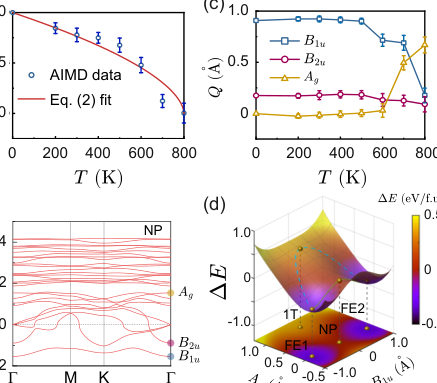
<figcaption class="paper-figure-caption"><b>Fig 1.</b> FIG. 1. (a) Temperature-dependent normalized ferroelec- tric polarization P/P0 obtained from AIMD simulations (blue open circles) and the corresponding critical exponent fit (red solid line) yielding a Curie temperature TC ≈800 K. (b) Phonon dispersion of the NP state. The key zone-center phonon modes (B1u, B2u, and Ag) involved in structural tran- sitions are highlighted at the Γ point. (c) Temperature evo- lution of the normal mode coordinates Q for the B1u, B2u, and Ag phonons extracted from equilibrium structures in the AIMD simulations. (d) 3D energy landscape ∆E mapped as a function of Q(B1u) and Q(Ag). The surface illustrates the relative stabilities and transition energy barriers...</figcaption>
</figure>
<figure class="paper-figure-card">
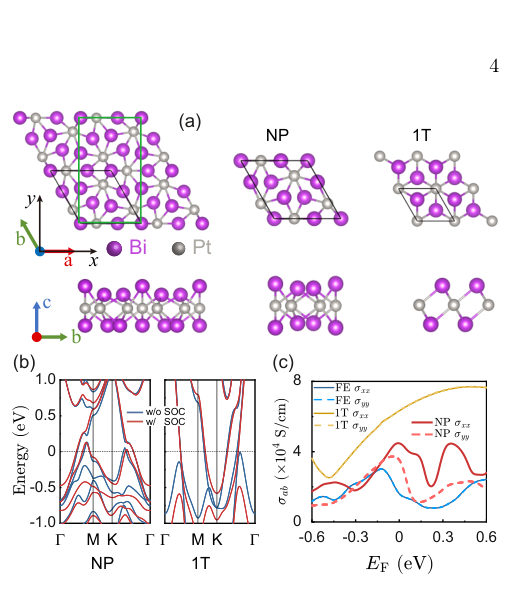
<figcaption class="paper-figure-caption"><b>Fig 2.</b> FIG. 2. (a) Top and side views of the atomic structures for the FE (left), NP (middle), and 1T (right) states. The Bi and Pt atoms are represented by purple and grey spheres, respec- tively. The black rhombuses mark the lattice of the pristine primitive cell, and the green rectangle marks the lattice of the FE PtBi2 under uniaxial strain, which breaks the C3z ro- tational symmetry. (b) Calculated electronic band structures for the NP and 1T states. (c) Calculated in-plane electrical conductivity tensor components (σxx and σyy) as a function of the Fermi level. The FE and 1T states exhibit isotropic in-plane conductivity (σxx = σyy) protected by their C3z spa- tial symmetry, whereas the NP...</figcaption>
</figure>
<figure class="paper-figure-card">
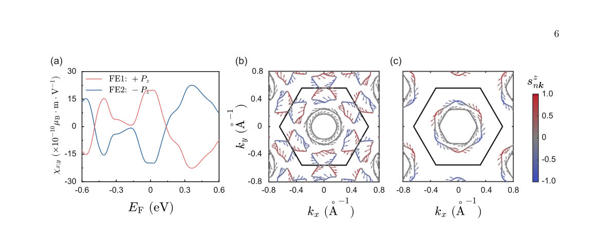
<figcaption class="paper-figure-caption"><b>Fig 3.</b> FIG. 3. (a) The calculated Edelstein coefficient χx;y as a function of the Fermi level EF for FE1 (+Pz) and FE2 (−Pz) of monolayer PtBi2. (b) The Fermi surface and corresponding spin texture in the BZ at EF = 0. (c) The Fermi surface and spin texture at a shifted Fermi energy of EF = 0.2 eV. In (b) and (c), the arrows represent the direction and magnitude of in-plane spin polarization, while the color encodes the magnitude of out-of-plane spin component sz nk.</figcaption>
</figure>
<figure class="paper-figure-card">

<figcaption class="paper-figure-caption"><b>Fig 4.</b> FIG. 4. (a) The independent non-zero components of the intrinsic spin Hall conductivity, σx;xy int and σz;xy int , as a function of the Fermi level EF. (b, c) The k-resolved spin Berry curvature (b) Ωsx xy and (c) Ωsz xy summed over all occupied states in momentum space at EF = 0. The solid black hexagon represents the first BZ, and the dashed lines indicate the Fermi surface contours.</figcaption>
</figure>
<figure class="paper-figure-card">

<figcaption class="paper-figure-caption"><b>Fig 5.</b> FIG. 5. (a),(c) The nonlinear Hall conductivity σBCD x;yy and the corresponding BCD Dyz as a function of the Fermi energy EF under various uniaxial strains applied along the (a) x direction (εxx) and (c) y direction (εyy). (b),(d) The calculated BCD Dyz at EF = 0 as a function of the applied uniaxial strain along the (b) x and (d) y directions.</figcaption>
</figure>
</div>

<p><strong>Summary.</strong> This work theoretically investigates $ ext{PtBi}_2$, a 2D ferroelectric metal, demonstrating its potential for next-generation electronics. Using first-principles calculations, the authors predict high operational temperatures and significant spin-charge conversion effects. They conclude by proposing a novel nonvolatile memory device concept based on domain wall switching.</p>
<p><strong>Why it may be interesting.</strong> While focused on condensed matter electronics, the study of polarization switching coupled with charge/spin currents touches upon emergent order parameters and non-equilibrium dynamics that are relevant to advanced quantum control concepts.</p>
<details>
<summary>Detailed structure</summary>
<p><strong>Main problem.</strong> The study investigates the electrical transport properties of intrinsic two-dimensional (2D) ferroelectric metals, aiming to overcome the limitation that traditional ferroelectrics are often insulating.</p>
<p><strong>Main result.</strong> The material exhibits high Curie temperature ($T_C \approx 800\ 	ext{K}$), sizable charge-to-spin conversion efficiencies (Edelstein and SHE), and enables conceptual design of a nonvolatile Ferroelectric Metal Field-Effect Transistor (FEM-FET).</p>
<p><strong>Method.</strong> The research employs first-principles calculations combined with the semiclassical Boltzmann transport equation to model linear, nonlinear, and spin transport responses.</p>
<p><strong>Model / system.</strong> The physical system is the intrinsic 2D ferroelectric metal $   ext{PtBi}_2$. The theoretical framework involves analyzing its polarization switching, electronic band structure, and resulting charge/spin currents under applied fields.</p>
<p><strong>Key observables.</strong> Electrical conductivity ($\sigma_{ab}$), Edelstein effect coefficient ($\chi$), Spin Hall conductivity ($\sigma^{ext}_{i;ab}$), Nonlinear Hall effect (NLHE), and ferroelectric polarization ($P$).</p>
<p><strong>Important parameters / regimes.</strong> High Curie temperature ($\sim 800\ 	ext{K}$); applied electric field ($E$); uniaxial strain.</p>
<p><strong>Assumptions / limitations.</strong> The transport analysis relies on the semiclassical Boltzmann theory, and an effective thickness scaling is used for comparison with bulk materials.</p>
<p><strong>Figures summary.</strong> Figures illustrate temperature-dependent polarization confirming high $T_C$, phonon dispersion showing structural phase transitions (FE $\leftrightarrow$ NP), and conductivity anisotropy measurements distinguishing different phases.</p>
<p><strong>Paper structure.</strong> The paper systematically analyzes the material's ferroelectric stability via AIMD, calculates linear/nonlinear transport coefficients using Boltzmann theory, discusses spin-related effects (Edelstein/SHE), and culminates in proposing a device concept (FEM-FET) based on domain wall physics.</p>
</details>
<details>
<summary>Abstract</summary>
<p>Breaking the conventional stereotype that ferroelectrics are necessarily insulating, two-dimensional (2D) ferroelectric metals combine seemingly incompatible switchable electric polarization and metallic conductivity, providing a fertile ground for the discovery of novel electrical transport phenomena and the development of innovative electronic devices. Using the semiclassical Boltzmann equation and first-principles calculations, we systematically investigate the linear and nonlinear transport responses of the intrinsic 2D ferroelectric metal \ch{PtBi2} to an applied electric field. Our \textit{ab initio} molecular dynamics simulations reveal that it possesses a high Curie temperature reaching $800~\text{K}$. We propose that the crystal structure of its high-temperature paraelectric phase can be explicitly distinguished through simple measurements of the in-plane electrical conductivity. Quantitative calculations of the Edelstein effect and the intrinsic spin Hall effect demonstrate a sizable charge-to-spin conversion efficiency, highlighting its potential in spintronics. We also find that a Berry curvature dipole-induced nonlinear Hall effect emerges in uniaxially strained \ch{PtBi2}. Furthermore, we highlight the unique advantages of 2D ferroelectric metals in gate-controlled transport applications. Based on the domain wall scattering mechanism, we conceptually design a novel ferroelectric metal field-effect transistor (FEM-FET) capable of nonvolatile switching between high-resistance and low-resistance states under a gate voltage. Our work not only unveils the rich transport physics in 2D ferroelectric metals but also provides valuable insights into the design of next-generation nonvolatile memory and spintronic devices.</p>
</details>
<p><sub><a href="#top">↑ back to top</a></sub></p>

<p><a id="paper-2608.12285"></a></p>
<h3 id="wormhole-geometry-from-a-magnetic-vortex"><a href="http://arxiv.org/abs/2608.12285v1">Wormhole Geometry from a Magnetic Vortex</a></h3>
<p><strong>Authors:</strong> Dušan Đorđ ević, Fabián Molina, Vladimir Juričić<br>
<strong>Type:</strong> theory · <strong>Category:</strong> other · <strong>PDF:</strong> <a href="https://arxiv.org/pdf/2608.12285v1">https://arxiv.org/pdf/2608.12285v1</a><br>
<strong>Analysis basis:</strong> full PDF text, analyzed in chunks
<strong>Topic relevance:</strong> <code>analog quantum simulation</code> <strong>3/5</strong> · <code>quantum measurements</code> <strong>2/5</strong> · <code>Keldysh / 2PI / non-Gaussian methods</code> <strong>1/5</strong> · <code>interference shaping light</code> <strong>1/5</strong></p>
<div class="figure-strip-hint">↔ Scroll figures horizontally</div>
<div class="paper-figures-scroll">
<figure class="paper-figure-card">

<figcaption class="paper-figure-caption"><b>Fig 1.</b> FIG. 1. Vortex-induced wormhole geometry (k = 0). (a) The magnetic vortex texture (arrows: in-plane spin orientation S) with the emergent negative Ricci-curvature magnitude −R/R0 (color), where R is given by Eq. (9) and R0 = 2/a2 q. The magnitude of the negative curvature is largest at the core. (b) Geodesics of the effective metric (5), colored by impact parameter defined before Eq. (10). The grey disk marks the microscopic cutoff of the exterior Ellis geometry. The exact deflection law and its q2/J collapse are shown in Fig. 2.</figcaption>
</figure>
<figure class="paper-figure-card">

<figcaption class="paper-figure-caption"><b>Fig 2.</b> FIG. 2. Universal q2/J scaling. (a) Deflection angle Θ for three values of q2/J, with b in units of the fixed length a0 = ℏ/(2√mJ0). Because a2 q = q2ℏ2/(4mJ), configurations with the same q2/J have the same aq and therefore the same deflection without rescaling. For each color, the solid curve corresponds to a configuration at J = J0, while the open marker denotes a distinct configuration at J = 4J0 with the same q2/J, and hence the same deflection without rescaling: (q, J) = (1, J0) is paired with (2, 4J0), and (q, J) = (2, J0) with (4, 4J0). (b) Measured in each configuration’s own Ellis scale, ˜b = b/aq, the data collapse onto Eq. (11) (solid), with the weak-field tail (π/4)˜b−2...</figcaption>
</figure>
<figure class="paper-figure-card">

<figcaption class="paper-figure-caption"><b>Fig 3.</b> FIG. 3. Designer honeycomb emulator. (a) Engineered nearest-neighbor hoppings (color: tn/t0) realizing the inverse vielbein of the core-truncated Ellis metric to leading order, with tangential bonds suppressed near the core [Eq. (16)]. (b) Target velocity profile, vr = vF and vϕ/vF = r/ p</figcaption>
</figure>
</div>

<p><strong>Summary.</strong> This work demonstrates that the topological structure of a magnetic vortex induces an emergent curved space metric analogous to the exterior of an Ellis wormhole for electrons. The key findings are two experimentally distinct signatures: measurable electron deflection governed by the vortex winding, and a quantized Berry phase response dependent on winding parity. This establishes a powerful 'texture–geometry dictionary' applicable to quantum materials.</p>
<p><strong>Why it may be interesting.</strong> It provides a concrete, physical mechanism—a magnetic vortex—to generate an effective curved spacetime geometry that can be probed using standard quantum scattering techniques in condensed matter systems.</p>
<details>
<summary>Detailed structure</summary>
<p><strong>Main problem.</strong> The study investigates how the topology of a magnetic vortex dictates the effective geometry experienced by itinerant electrons, linking defects to curved spacetime analogues.</p>
<p><strong>Main result.</strong> A single magnetic vortex defect successfully generates an emergent metric realizing the exterior spatial geometry of an Ellis wormhole. This effect is characterized by two distinct, measurable signatures: electron deflection and a half-flux Aharonov-Bohm response.</p>
<p><strong>Method.</strong> The analysis combines deriving effective metrics from spin textures with solving geodesic equations and performing partial-wave scattering analyses to quantify quantum phase shifts.</p>
<p><strong>Model / system.</strong> The system models electrons propagating in a background coupled strongly to an elementary magnetic vortex. The geometry is mathematically compared to the exterior of an Ellis wormhole, and the results are tested by emulating the metric in designer honeycomb lattices.</p>
<p><strong>Key observables.</strong> Electron deflection angle ($\Theta(b)$), Berry phase flux (Aharonov-Bohm response), and the effective curved space metric ($ds^2$).</p>
<p><strong>Important parameters / regimes.</strong> Vortex winding number ($q$), Hund exchange coupling ($J$), and the characteristic Ellis length scale ($a_q \propto q/\sqrt{J}$).</p>
<p><strong>Assumptions / limitations.</strong> The analysis focuses on the exterior, core-truncated region of the wormhole geometry; lattice simulations require valley symmetrization to isolate the metric response.</p>
<p><strong>Figures summary.</strong> Figures illustrate vortex textures and corresponding geodesics showing negative Ricci curvature. Other figures demonstrate universal scaling laws for deflection angles ($\Theta \propto q^2/J$) and show engineered hoppings reproducing continuum geodesic profiles in lattices.</p>
<p><strong>Paper structure.</strong> The paper progresses from deriving the effective metric from spin texture variations, calculating observable quantities like deflection via elliptic integrals, establishing two independent signatures (metric vs. Berry flux), and finally validating these predictions by simulating wave-packet propagation on artificial honeycomb lattices.</p>
</details>
<details>
<summary>Abstract</summary>
<p>Strong coupling to a magnetic texture makes an electron propagate through an emergent curved space. We show that an elementary vortex realizes the exterior spatial geometry of an Ellis wormhole: an ultrastatic throat with radius fixed by the topological charge and Hund exchange, cut off at short distances by the microscopic core. Two separable signatures follow directly: the electron deflection collapses onto a single Ellis curve governed by the vortex winding and exchange coupling, while the spin Berry phase produces a half-flux Aharonov--Bohm response switched on and off by winding parity. The same metric can be emulated in a designer honeycomb lattice, where the valley-symmetrized wave-packet response follows the predicted exterior geodesic. These signatures are accessible through real-space electron deflection and scattering, providing experimentally distinct probes of the emergent geometry and Berry flux. The magnetic vortex thus turns a topological defect into a tunable curved-space lens for electrons in quantum materials and designer lattices.</p>
</details>
<p><sub><a href="#top">↑ back to top</a></sub></p>

<p><a id="paper-2608.11906"></a></p>
<h3 id="spin-polarized-supercurrents-and-josephson-diode-effect-in-altermagnets"><a href="http://arxiv.org/abs/2608.11906v1">Spin-polarized supercurrents and Josephson diode effect in altermagnets</a></h3>
<p><strong>Authors:</strong> Janus F. Niebuhr, Matthias Eschrig, Danilo Nikolić<br>
<strong>Type:</strong> theory · <strong>Category:</strong> other · <strong>PDF:</strong> <a href="https://arxiv.org/pdf/2608.11906v1">https://arxiv.org/pdf/2608.11906v1</a><br>
<strong>Analysis basis:</strong> full PDF text, analyzed in chunks
<strong>Topic relevance:</strong> <code>Keldysh / 2PI / non-Gaussian methods</code> <strong>3/5</strong> · <code>methods for driven-dissipative</code> <strong>1/5</strong> · <code>quantum measurements</code> <strong>1/5</strong></p>
<div class="figure-strip-hint">↔ Scroll figures horizontally</div>
<div class="paper-figures-scroll">
<figure class="paper-figure-card">

<figcaption class="paper-figure-caption"><b>Fig 1.</b> FIG. 1. A scheme of the system under study consisting of an altermagnet (AM) coupled to two BCS superconductors (SC). In general, the SC/AM interfaces are spin-dependent with misaligned magnetic moments. For illustration, the al- termagnet is shown in the dxy orientation (ϕ0 = π/4); how- ever, the results presented in the manuscript are obtained for the general case of an arbitrary orientation, ϕ0 ∈[0, π/4] (see the text below).</figcaption>
</figure>
<figure class="paper-figure-card">

<figcaption class="paper-figure-caption"><b>Fig 2.</b> FIG. 2. The Josephson CPR in an SC/AM/SC junction for altermagnet’s thickness of d = ξ at temperature T = 0.1 Tc, different values of altermagnetic exchange field h0/∆0, and (a) the dx2−y2 orientation and (b) the dxy orientation. Panel (c): the corresponding critical currents Ic as functions of the altermagnetic exchange field h0/∆0. Panels (d) and (e): the amplitudes of the first harmonic (solid lines) and the second harmonic (dashed lines) as functions of the altermagnetic ex- change field h0/∆0 for the two orientations.</figcaption>
</figure>
<figure class="paper-figure-card">

<figcaption class="paper-figure-caption"><b>Fig 3.</b> FIG. 3. The Josephson CPR in different altermagnetic junc- tions. Panel (a) shows the Josephson CPR across an alter- magnet coupled to superconductors via two spin-active in- terfaces (”trilayer”) for different misalignment between the altermangetic exchange field h and the exchange field of the right SC/AM interface JR. Panel (b) shows first four har- monic amplitudes as a function of αR. Panel (c) shows the corresponding CPR in the system featuring one interface spin active and the other normal insulating (”bilayer”). Panel (d) shows the harmonic amplitudes in the case of a trilayer (pur- ple) and a bilayer (orange).</figcaption>
</figure>
<figure class="paper-figure-card">

<figcaption class="paper-figure-caption"><b>Fig 4.</b> FIG. 4. Panel (a): The charge current Ich as function of the superconducting phase difference ∆χ and the quantum geo- metric phase ∆φ. Panel (b): The corresponding spin current Isp. Horizontal cross-sections of the color scale plot from (a) taken for ∆φ = 0 and ∆φ = 0.65π [see the dotted line in panel (a)] are shown in panels (c) and (d), respectively. The currents are calculated for the ϕ0 = 0 (dx2−y2 orientation of the altermagnet), the temperature T/Tc = 0.1, and the alter- magnetic exchange field of h0/EF = 0.5. Other parameters are mentioned at the beginning of the section.</figcaption>
</figure>
<figure class="paper-figure-card">

<figcaption class="paper-figure-caption"><b>Fig 5.</b> FIG. 5. Charge diode efficiency ηch as a function of various system’s parameters. Panel (a) shows the dependence of ηch on the quantum-geometric angle ∆φ for three different orien- tations of the altermagnet given by ϕ0. Panel (b) shows the dependence of the orientation of the altermagnet for different geometric angles. Panel (c) shows the role of temperature T for different altermagnetic exchange strengths h0. Panel (d) shows the dependence on the altermagnetic exchange fields for different temperatures.</figcaption>
</figure>
</div>

<p><strong>Summary.</strong> This theoretical study models supercurrents across junctions involving an altermagnet and superconductors. By analyzing the junction's response in different magnetic polarization regimes, the authors predict that a specific noncoplanar magnetic configuration induces a robust Josephson diode effect. This demonstrates how fundamental magnetic symmetries can govern macroscopic electronic transport properties.</p>
<p><strong>Why it may be interesting.</strong> This work bridges superconductivity with magnetism in a highly non-trivial way, predicting novel electronic transport phenomena (diode effects) directly controlled by the symmetry of the underlying magnetic order parameter. This is relevant for understanding superconducting spintronics.</p>
<details>
<summary>Detailed structure</summary>
<p><strong>Main problem.</strong> The study investigates spin-polarized supercurrents and the emergence of a Josephson diode effect (JDE) in junctions formed by an altermagnet (AM) sandwiched between two BCS superconductors (SC). The focus is on how magnetic structure dictates nonreciprocal transport.</p>
<p><strong>Main result.</strong> A noncoplanar exchange field profile within the strongly spin-polarized AM regime leads to quantum geometric phases, causing a Josephson diode effect with high charge and perfect spin diode efficiencies. Conversely, other configurations yield normal or suppressed effects.</p>
<p><strong>Method.</strong> The analysis employs advanced quasiclassical Green's function techniques (Gor'kov/Eilenberger formalism) applied to the SC/AM/SC geometry.</p>
<p><strong>Model / system.</strong> The system is an SC/AM/SC junction where the AM is a d-wave altermagnet. The model incorporates spin-dependent delta potentials at the interfaces and analyzes transport in both weakly and strongly polarized regimes.</p>
<p><strong>Key observables.</strong> Josephson current-phase relation (CPR), charge diode efficiency, spin diode efficiency, and quantum geometric phases ($\Delta\varphi$).</p>
<p><strong>Important parameters / regimes.</strong> The relative strength of the exchange field ($h_0$) compared to the Fermi energy ($E_F$) and superconducting gap ($\Delta$), which defines the polarization regime.</p>
<p><strong>Assumptions / limitations.</strong> The analysis assumes ideal SC/AM interfaces (continuity of Green's functions) and often focuses on quasiparticles at the Fermi surface. The diode effect strongly depends on achieving a half-metallic contribution.</p>
<p><strong>Figures summary.</strong> Figures illustrate the Josephson CPR for different magnetic orientations ($\phi_0$) and polarization regimes, showing how current asymmetry ($I_{ch}$ vs $\Delta\chi$) manifests as a diode effect.</p>
<p><strong>Paper structure.</strong> The paper systematically develops the theoretical framework using Green's functions, analyzes the weak polarization limit first, and then focuses heavily on the strongly polarized regime to derive the conditions necessary for the Josephson diode effect based on magnetic field geometry.</p>
</details>
<details>
<summary>Abstract</summary>
<p>We present a systematic theoretical study of the Josephson effect in junctions consisting of a d-wave altermagnet (AM) placed between two BCS superconductors (SC). In general, the SC/AM interfaces are spin-active and modeled by spin-dependent $δ$ potentials, allowing for an arbitrary direction of the local exchange field vector. The model is formulated within the fully quantum (Gor'kov) and quasiclassical (Eilenberger) Green's function technique, applied to two distinct cases of (i) a weakly spin-polarized AM (exchange field much smaller compared to the Fermi energy) and (ii) a strongly spin-polarized AM (exchange field comparable to the Fermi energy). We apply our model to the SC/AM/SC geometry, accounting for the Josephson current-phase relation (CPR). In the weakly spin-polarized regime, the CPR displays the normal Josephson effect. Irrespective of the orientation of the altermagnet, the junction undergoes the $0-π$ transition. Depending on the orientation, the system displays the features similar to those of a ferromagnetic or an antiferromagnetic junction. To investigate the spin-polarized currents and nonreciprocal transport as the central results of the present work, we put the main focus on the strongly spin-polarized regime. Within this regime, we distinguish two cases. A coplanar exchange field profile across the junctions displays the normal Josephson effect; however, with a pure and stable long-range second harmonic in the CPR. In contrast, a noncoplanar exchange field profile gives rise to the so-called quantum geometric phases across the junction, leading to the absence of the phase-inversion center in the Josephson CPR. As a result, a Josephson diode effect emerges with a significant charge diode efficiency larger than 30% and a perfect spin diode efficiency of 100%.</p>
</details>
<p><sub><a href="#top">↑ back to top</a></sub></p>

<p><a id="paper-2608.11432"></a></p>
<h3 id="giant-effective-permeability-in-drude-thin-films-probed-by-thz-time-domain-spectroscopy"><a href="http://arxiv.org/abs/2608.11432v1">Giant Effective Permeability in Drude Thin Films Probed by THz Time-Domain Spectroscopy</a></h3>
<p><strong>Authors:</strong> Gian Paolo Papari, Zahra Mazaheri, Antonio Vettoliere, Carmine Granata, Roberto Russo, Giovanni Ausanio, Umar Farooq, Junaid Yaseen, Can Koral, Antonello Andreone<br>
<strong>Type:</strong> both · <strong>Category:</strong> other · <strong>PDF:</strong> <a href="https://arxiv.org/pdf/2608.11432v1">https://arxiv.org/pdf/2608.11432v1</a><br>
<strong>Analysis basis:</strong> full PDF text, analyzed in chunks
<strong>Topic relevance:</strong> <code>Keldysh / 2PI / non-Gaussian methods</code> <strong>2/5</strong> · <code>methods for driven-dissipative</code> <strong>2/5</strong> · <code>quantum measurements</code> <strong>2/5</strong> · <code>analog quantum simulation</code> <strong>1/5</strong> · <code>correlated / nonlocal dissipation</code> <strong>1/5</strong> · <code>driven-dissipative phase transition</code> <strong>1/5</strong> · <code>interference shaping light</code> <strong>1/5</strong> · <code>non-equilibrium universality</code> <strong>1/5</strong></p>
<div class="figure-strip-hint">↔ Scroll figures horizontally</div>
<div class="paper-figures-scroll">
<figure class="paper-figure-card">

<figcaption class="paper-figure-caption"><b>Fig 1.</b> Figure 1: AFM image of the Al film 10nm-thick. The inset shows the histogram of heights revealing that the average</figcaption>
</figure>
<figure class="paper-figure-card">

<figcaption class="paper-figure-caption"><b>Fig 2.</b> Fig.2 reports the time-dependent signals corresponding to the transmission through the Cu film and the reflection from the Al, together with the respective reference signals from the Si substrate.</figcaption>
</figure>
<figure class="paper-figure-card">

<figcaption class="paper-figure-caption"><b>Fig 3.</b> Figure 2: (a) Black and red curves represent the time dependent signals transmitted across a Si substrate and the Cu film,</figcaption>
</figure>
<figure class="paper-figure-card">

<figcaption class="paper-figure-caption"><b>Fig 4.</b> Figure 3: Polar representations of electrodynamic parameters. The colored areas indicate the phase intervals of (a) the</figcaption>
</figure>
<figure class="paper-figure-card">

<figcaption class="paper-figure-caption"><b>Fig 5.</b> Figure 4: In (a) and (b), the complex refractive index of the Al and Cu thin films is shown, respectively. The insets display the same parameters obtained processing the transmission measurements and applying the 𝜇̃ = 1 condition.</figcaption>
</figure>
</div>

<p><strong>Summary.</strong> This work demonstrates that assuming unit magnetic permeability ($\mu=1$) when analyzing THz spectroscopy data for metals like Al and Cu leads to inaccurate electrodynamic characterization. By employing a self-consistent retrieval method, the authors show that the effective permeability significantly deviates from unity due to large screening currents induced by time-varying magnetic fields. This highlights the necessity of treating $ ilde{\mu}$ as an independent variable in such analyses.</p>
<p><strong>Why it may be interesting.</strong> While focused on classical electromagnetism, the concept of induced macroscopic fields (screening currents) leading to parameter misinterpretation mirrors how boundary conditions or approximations can fundamentally alter the perceived quantum state or response in complex open quantum systems.</p>
<details>
<summary>Detailed structure</summary>
<p><strong>Main problem.</strong> The standard assumption of unit relative magnetic permeability (mu=1) when analyzing THz spectroscopy data for metallic films introduces significant errors in retrieving the true electrodynamic parameters.</p>
<p><strong>Main result.</strong> The effective permeability ($  ilde{\mu}$) significantly deviates from unity, a deviation attributed not to intrinsic magnetism but to macroscopic screening currents governed by the Faraday-Neumann-Lenz effect.</p>
<p><strong>Method.</strong> The authors employed a self-consistent retrieval method (CTVT) on both transmission and reflection THz time-domain spectroscopy data to independently determine complex permittivity ($ ilde{\epsilon}$) and permeability ($   ilde{\mu}$).</p>
<p><strong>Model / system.</strong> The study investigates highly conductive thin films of Aluminum and Copper deposited on substrates, analyzing their response in the terahertz frequency range using Drude dielectric modeling.</p>
<p><strong>Key observables.</strong> Complex permittivity ($    ilde{\epsilon}$), complex permeability ($   ilde{\mu}$), complex refractive index ($    ilde{n}$), and normalized impedance ($  ilde{z}$).</p>
<p><strong>Important parameters / regimes.</strong> Plasma frequency ($\omega_p$), relaxation time ($\omega_	au$), skin depth ($\delta(\omega)$), and the ratio of THz wavelength to skin depth ($\lambda_{in} / \delta$).</p>
<p><strong>Assumptions / limitations.</strong> The primary assumption challenged is $   ilde{\mu}=1$; the analysis requires treating $  ilde{\epsilon}$ and $   ilde{\mu}$ independently for accurate characterization.</p>
<p><strong>Figures summary.</strong> Figures illustrate time-dependent THz signals, polar representations of electrodynamic parameters showing phase constraints, and comparisons of skin depths calculated under different assumptions ($  ilde{\mu}=1$ vs. free retrieval).</p>
<p><strong>Paper structure.</strong> The paper establishes the problem with $   ilde{\mu}=1$, details the self-consistent retrieval methodology using THz-TDS data for Al/Cu films, presents results showing large deviations in $  ilde{\mu}$, and finally provides a physical interpretation linking this deviation to screening currents via the FNL effect.</p>
</details>
<details>
<summary>Abstract</summary>
<p>The electromagnetic response of metallic films is commonly analyzed in terahertz spectroscopy by assuming unit relative magnetic permeability. In this work we show that this assumption introduces significant distortions in the electrodynamic retrieval of highly conductive films. Aluminum and copper films, 10 nm thick, were investigated by terahertz time-domain spectroscopy in both transmission and reflection configurations. By applying a self consistent retrieval method that independently determines the complex permittivity and permeability, we show that the Drude-type dielectric response is systematically accompanied by a permeability that strongly departs from unity. This deviation is intrinsically linked to the reactive impedance of the films, which clarifies the light induced onset of large screening currents within a transversally confined geometry. A phenomenological interpretation based on the Faraday Neumann Lenz mechanism and a lumped-element model of the film impedance accounts for the observed trends. These results indicate that the common assumption $\tildeμ=1$ in non-magnetic Drude films can lead to an incomplete or biased electrodynamic characterization in the terahertz regime.</p>
</details>
<p><sub><a href="#top">↑ back to top</a></sub></p>

<p><a id="paper-2608.11885"></a></p>
<h3 id="metastable-soliton-necklaces-confined-by-the-boundary-of-a-flattop-region"><a href="http://arxiv.org/abs/2608.11885v1">Metastable soliton necklaces confined by the boundary of a flattop region</a></h3>
<p><strong>Authors:</strong> Dmitry A. Zezyulin<br>
<strong>Type:</strong> theory · <strong>Category:</strong> other · <strong>PDF:</strong> <a href="https://arxiv.org/pdf/2608.11885v1">https://arxiv.org/pdf/2608.11885v1</a><br>
<strong>Analysis basis:</strong> full PDF text, analyzed in chunks
<strong>Topic relevance:</strong> <code>driven-dissipative phase transition</code> <strong>2/5</strong> · <code>Frenkel-Kontorova</code> <strong>1/5</strong> · <code>Keldysh / 2PI / non-Gaussian methods</code> <strong>1/5</strong> · <code>analog quantum simulation</code> <strong>1/5</strong> · <code>correlated / nonlocal dissipation</code> <strong>1/5</strong> · <code>interference shaping light</code> <strong>1/5</strong> · <code>methods for driven-dissipative</code> <strong>1/5</strong> · <code>non-equilibrium universality</code> <strong>1/5</strong></p>
<div class="figure-strip-hint">↔ Scroll figures horizontally</div>
<div class="paper-figures-scroll">
<figure class="paper-figure-card">

<figcaption class="paper-figure-caption"><b>Fig 1.</b> FIG. 1: The amplitude distributions |ψ1,2(x, y, z = 0)| for the seed solution (a,b) with propagation constants (b1, b2) ≈ (3.0525, 0.1795) and for the soliton necklace (c,d) with N = 10, M = 5, and R = 13, generated from this seed. The next- neighbor solitons in the necklace are out-of-phase in the first component (i.e., ∆θ = π), and in-phase in the second (i.e., ∆θ = 0). All plots are shown within the transverse spatial window x, y ∈[−25, 25]. The colorbar applies to all panels.</figcaption>
</figure>
<figure class="paper-figure-card">

<figcaption class="paper-figure-caption"><b>Fig 2.</b> FIG. 2: Radial profiles u1,2(R) of the seed solution from Fig. 1 (left axis) and several dependencies H(R) for different com- binations (N, M) (right axis). For better comparison, each dependence H(R) is shown up to an irrelevant constant shift H0, which differs for each pair (N, M).</figcaption>
</figure>
<figure class="paper-figure-card">

<figcaption class="paper-figure-caption"><b>Fig 3.</b> FIG. 3: The upper panel shows the dependence Rm(z), for the soliton necklace initialized with radius R minimizing the de- pendence H(R) (curve 1) and with the mean oscillation radius (curve 2). The latter case includes additional random noise in the input solution. The calculation corresponding to curve 1 was terminated at z = 1500. Second and third rows show the amplitude distributions of |ψ2| at different z for curve 1 (the second row) and curve 2 (the third row). Amplitude distributions |ψ1| are similar, except that the flattop plateau is absent in ψ1. All plots in the second and third rows are shown within the transverse spatial window x, y ∈[−25, 25]. Gray dashed circles show the radii...</figcaption>
</figure>
<figure class="paper-figure-card">

<figcaption class="paper-figure-caption"><b>Fig 4.</b> FIG. 4: The radius R of the most robustly propagating necklace (left axis) and the distance ∆between the next- neighbor solitons (right axis), both plotted versus the soli- ton number N. For each N, the necklace was generated with M = floor(N/2).</figcaption>
</figure>
<figure class="paper-figure-card">

<figcaption class="paper-figure-caption"><b>Fig 5.</b> FIG. 5: The upper panel shows the dependence Rm(z) for the soliton necklace with (N, M) = (8, 4) generated from the seed solution with the propagation constants (b1, b2) ≈ (2.1225, 0.1795) (curve 1) and for the necklace with (N, M) = (20, 10) generated from the seed solution with (b1, b2) ≈ (3.1825, 0.1835) (curve 2). Both simulations include addi- tional random noise in the input solutions. Second and third rows show the amplitude distributions of |ψ2| at different propagation distances z for curve 1 (the second row) and curve 2 (the third row). All plots in the second and third rows are shown within the transverse spatial window x, y ∈ [−45, 45]. Gray dashed circles show the radii of the...</figcaption>
</figure>
</div>

<p><strong>Summary.</strong> This paper investigates how multi-soliton necklaces can maintain stable propagation in a specialized nonlinear medium. The stability arises from a delicate balance: repulsion among solitons in one component is counteracted by the confining effect of the boundary structure in a second coupled component. Numerical simulations confirm that careful initialization based on system dynamics leads to robust, long-lived metastable states.</p>
<p><strong>Why it may be interesting.</strong> This work is highly relevant as it explores complex nonlinear wave dynamics in optical systems, drawing parallels between quantum field theory concepts (solitons, nonlinearity) and physical phenomena like light guiding and confinement, which touches upon advanced topics in quantum optics.</p>
<details>
<summary>Detailed structure</summary>
<p><strong>Main problem.</strong> The study elucidates a mechanism for the quasistationary propagation of multi-soliton necklaces within a two-component envelope system exhibiting competing cubic-quintic nonlinearity.</p>
<p><strong>Main result.</strong> Metastable propagation is achieved by balancing inter-soliton repulsion (in one component) against boundary confinement (from the flattop region in the second component), showing robustness even with added noise.</p>
<p><strong>Method.</strong> The research relies on numerical simulations tracking the radial position of maximum intensity and comparing initialization methods to assess stability over long propagation distances.</p>
<p><strong>Model / system.</strong> The system is modeled by a two-component envelope ($\psi_1, \psi_2$) governed by a nonlinear Schrödinger type equation with a Hamiltonian incorporating cubic-quintic nonlinearity. The confinement mechanism is analogous to nonlinear total internal reflection at the boundary of a flattop region.</p>
<p><strong>Key observables.</strong> The primary observables are the radial position of maximum intensity ($R_m(z)$) and the stability/persistence of the soliton necklace over propagation distance $z$.</p>
<p><strong>Important parameters / regimes.</strong> Key parameters include the number of solitons ($N$), the phase difference between adjacent solitons ($\Delta	heta = \pi$ for repulsion), and the geometry defined by the flattop region width.</p>
<p><strong>Assumptions / limitations.</strong> The analysis assumes a quasistationary regime where stability is achieved through a specific balance of nonlinear forces, and initial simulations suggest that using the mean oscillation radius enhances robustness significantly.</p>
<p><strong>Figures summary.</strong> Figures illustrate amplitude distributions for soliton necklaces (e.g., N=10), track the evolution of the necklace radius $R_m(z)$ under different initialization conditions, and compare stable propagation with noisy inputs.</p>
<p><strong>Paper structure.</strong> The paper establishes the physical model using a two-component envelope equation; it then analyzes the stability mechanism by relating soliton repulsion to boundary confinement; finally, numerical simulations demonstrate robust metastable propagation when specific initial conditions (mean oscillation radius) are used.</p>
</details>
<details>
<summary>Abstract</summary>
<p>We present quasistationary ring-shaped soliton necklaces in a two-component envelope propagating in a medium with competing cubic-quintic nonlinearity. Metastable propagation of soliton necklaces results from a balance of repulsion between adjacent out-of-phase solitons in one component and confinement by the boundary of a flattop region in the other. Numerical simulations demonstrate metastable propagation over about a hundred diffraction lengths, even with random noise added to the input envelopes. The maximum number of solitons in metastable necklaces can be controlled either by changing the size of individual solitons or by adjusting the width of the flattop region hosting the necklace.</p>
</details>
<p><sub><a href="#top">↑ back to top</a></sub></p>

<p><a id="paper-2608.12024"></a></p>
<h3 id="formally-verified-lock-free-software-transactional-memory-for-scientific-measurement"><a href="http://arxiv.org/abs/2608.12024v1">Formally Verified Lock-Free Software Transactional Memory for Scientific Measurement</a></h3>
<p><strong>Authors:</strong> Kentaro Kitagawa<br>
<strong>Type:</strong> theory · <strong>Category:</strong> other · <strong>PDF:</strong> <a href="https://arxiv.org/pdf/2608.12024v1">https://arxiv.org/pdf/2608.12024v1</a><br>
<strong>Analysis basis:</strong> full PDF text, analyzed in chunks
<strong>Topic relevance:</strong> <code>QC/QI experiment</code> <strong>2/5</strong> · <code>quantum measurements</code> <strong>2/5</strong> · <code>analog quantum simulation</code> <strong>1/5</strong> · <code>driven-dissipative phase transition</code> <strong>1/5</strong> · <code>methods for driven-dissipative</code> <strong>1/5</strong></p>
<div class="figure-strip-hint">↔ Scroll figures horizontally</div>
<div class="paper-figures-scroll">
<figure class="paper-figure-card">

<figcaption class="paper-figure-caption"><b>Fig 1.</b> FIG. 1. Concurrency model of the wide-field optically- detected magnetic resonance (ODMR) measurement of Fig. 2, drawn as its simplified node tree (see legend). Grey Parent– Child edges form the ownership tree of instrument drivers and display/aggregation sections under the root Measurement node. The scalar entries (Area1, Temp., Frequency) are multi- parented: each is owned by its source driver and simultane- ously aliased into the Scalar value list. Each dotted red box is one transactional commit, atomic over its subtree. When a driver commits, a post-commit signal propagates along the dependency chain; each listener takes a non-blocking consis- tent snapshot of its inputs (two snapshot...</figcaption>
</figure>
<figure class="paper-figure-card">

<figcaption class="paper-figure-caption"><b>Fig 2.</b> FIG. 2. GUI screenshot of the wide-field ODMR measurement modeled in Fig. 1: the camera image, the processed ODMR contrast map of the diamond NV centers, and the frequency-swept spectrum. In the right panel, an AI agent (a large language model connected through the Model Context Protocol, MCP) identifies high-contrast fluorescence regions in natural-language dialogue with the operator, reading the measurement state through the Snapshot API and publishing analysis-mask updates through the Transaction API. This workflow replaces manual region selection, which does not scale to high-throughput wide- field ODMR.</figcaption>
</figure>
<figure class="paper-figure-card">

<figcaption class="paper-figure-caption"><b>Fig 3.</b> FIG. 3. System architecture of KAME. The central STM layer shares the tree-structured state among instrument drivers, native C++ clients, and external clients. The same Snap- shot/Transaction API is exposed locally through pybind11 and remotely over ZeroMQ (ZMQ); Jupyter notebooks and AI agents connected through the Model Context Protocol (MCP) thus operate on the same transactional state.</figcaption>
</figure>
<figure class="paper-figure-card">

<figcaption class="paper-figure-caption"><b>Fig 4.</b> FIG. 4. State transitions of the four-phase bundle/unbundle protocol, drawn as the actual pointer graph. The Parent’s PacketList contains a snapshot of each child sub-packet (nested boxes). A bundled child’s Linkage holds a BundledRefWrapper whose packet is Null and whose bundledBy is a weak back-reference up to the Parent (dashed arrow); a snapshot of that child therefore follows bundledBy to the Parent and reads Parent.PacketList[child]. On commit (unbundle, panel d), the committing child is restored to a regular packet-holding PacketWrapper while the Parent’s sub is kept for recovery.</figcaption>
</figure>
<figure class="paper-figure-card">

<figcaption class="paper-figure-caption"><b>Fig 5.</b> FIG. 5. Parent–child topologies verified by the Layer 2 TLA+ models. (a)–(d) tree structures; (e)–(h) multi-parent (DAG) structures where a child is shared by two parents. Solid = static edge; dashed (ins/rel, migr.) = runtime insert/re- lease/migration.</figcaption>
</figure>
</div>

<p><strong>Summary.</strong> This paper presents a novel, formally verified lock-free Software Transactional Memory (STM) designed specifically for managing the shared, hierarchical state in automated condensed-matter measurement instruments. By providing atomic subtree updates and fast snapshots, it overcomes concurrency bottlenecks associated with traditional locking mechanisms. This robust framework enables complex, multi-threaded scientific workflows involving AI automation.</p>
<p><strong>Why it may be interesting.</strong> While not directly about quantum physics theory, the robust, high-concurrency state management techniques developed here are crucial for building complex, real-time control systems necessary for advanced quantum experiments like trapped ion or cavity QED measurements.</p>
<details>
<summary>Detailed structure</summary>
<p><strong>Main problem.</strong> The core problem is managing concurrent, shared state access from multiple threads (instrument control, data acquisition, GUI) in automated condensed-matter measurements without introducing deadlocks or significant latency.</p>
<p><strong>Main result.</strong> The authors designed and formally verified a lock-free Software Transactional Memory (STM) framework that allows for atomic subtree updates and $O(1)$ consistent snapshots of hierarchical state.</p>
<p><strong>Method.</strong> They implemented the STM using custom atomic shared pointers and a multi-phase CAS protocol to manage tree structure commits, which was rigorously checked using TLA+ and tested under weak memory models.</p>
<p><strong>Model / system.</strong> The system is an open-source measurement platform used for NMR and ODMR experiments, modeling its state as a naturally hierarchical tree structure (KAME model).</p>
<p><strong>Key observables.</strong> ODMR contrast map, frequency-swept spectrum, and the ability to acquire consistent subtree snapshots.</p>
<p><strong>Important parameters / regimes.</strong> The performance advantage is shown by achieving near $O(1)$ snapshot cost compared to $O(\log N)$ path copying in traditional COW structures.</p>
<p><strong>Assumptions / limitations.</strong> The design assumes that bounding retries via an oldest-first arbitration mechanism can maintain system-wide livelock-freedom, although general liveness proof remains complex.</p>
<p><strong>Figures summary.</strong> Figures illustrate the node tree structure of ODMR measurements, the overall KAME system architecture showing the STM layer, and the GUI workflow demonstrating AI agent interaction with measurement state via APIs.</p>
<p><strong>Paper structure.</strong> The paper details the necessity of concurrent access management in scientific instruments, introduces the lock-free STM as the solution, describes its tree structure and atomic operations (snapshot/transaction), provides formal verification results (TLA+), and discusses practical implementation interfaces (Python/ZMQ).</p>
</details>
<details>
<summary>Abstract</summary>
<p>Automated measurement of condensed-matter experiments requires instrument-control, data-acquisition, and user-interface threads to access shared, naturally hierarchical state concurrently. Coarse-grained locking can delay acquisition and cause sample loss, whereas fine-grained locking requires deadlock-prone lock ordering across instruments. Instead, we describe the lock-free software transactional memory (STM) that has been at the core of an open-source measurement platform for 16 years, in nuclear magnetic resonance experiments and, more recently, in optically detected magnetic resonance experiments. The STM organizes this state as a tree and provides atomic subtree updates and consistent subtree snapshots. After initial bundling, an unchanged subtree snapshot is acquired in $O(1)$ time through a custom lock-free atomic shared pointer. Within each bounded TLA+ configuration, TLC exhaustively checks the state space, establishing the safety and livelock-freedom properties specified for that configuration. Bounded executions of the atomic shared-pointer implementation are separately checked under the C11 weak-memory model. The same Snapshot and Transaction interfaces are exposed to Python scripting and AI-assisted automation.</p>
</details>
<p><sub><a href="#top">↑ back to top</a></sub></p>

<p><a id="paper-2608.11944"></a></p>
<h3 id="dimensional-crossover-and-local-strain-induced-deflection-of-the-spin-spiral-state-in-multiferroic-nii2"><a href="http://arxiv.org/abs/2608.11944v1">Dimensional crossover and local strain induced deflection of the spin spiral state in multiferroic NiI2</a></h3>
<p><strong>Authors:</strong> Tianxing Jiang, Lianchuang Li, Haiyan Zhu, Hongyu Wang, Junchao Tian, Wenzhao Wang, Weiyi Pan, Haitao Wang, Changlin Zheng, Hongjun Xiang, Changsong Xu, Donglai Feng, Tong Zhang<br>
<strong>Type:</strong> both · <strong>Category:</strong> strongly correlated electrons · <strong>PDF:</strong> <a href="https://arxiv.org/pdf/2608.11944v1">https://arxiv.org/pdf/2608.11944v1</a><br>
<strong>Analysis basis:</strong> full PDF text, analyzed in chunks
<strong>Topic relevance:</strong> <code>analog quantum simulation</code> <strong>2/5</strong> · <code>quantum measurements</code> <strong>2/5</strong> · <code>Frenkel-Kontorova</code> <strong>1/5</strong> · <code>Keldysh / 2PI / non-Gaussian methods</code> <strong>1/5</strong></p>
<div class="figure-strip-hint">↔ Scroll figures horizontally</div>
<div class="paper-figures-scroll">
<figure class="paper-figure-card">

<figcaption class="paper-figure-caption"><b>Fig 1.</b> Fig. 1. Lattice structure and STM/STEM characterization of few-layer NiI2. (a) The lattice structure of NiI2 (top view). Two types of edges are marked with blue and red frame. (b) The lattice structure of NiI2 with AB, AA and AB’ stackings (side view). (c) Topographic image of the NiI2 thin film sample (Vb = 1.8 V, I = 8 pA). Two types of edges are marked by blue/red lines. The terraces labelled by 1–5 ML have the same (AA) stacking order; while the terrace labeled by “mirror domain” has an AB’ stacking with respect to underneath layer. (d) Line profile along the green arrow in (c), the single step height is 0.63 nm. (e, f) HAADF STEM images of the few-layer NiI2 sample, showing the AA and...</figcaption>
</figure>
<figure class="paper-figure-card">

<figcaption class="paper-figure-caption"><b>Fig 2.</b> Fig. 2f shows an SP-STM image across a step edge. The spin spiral modulation exists in different terraces, while the phases of spin modulation between two adjacent terraces are nearly</figcaption>
</figure>
<figure class="paper-figure-card">

<figcaption class="paper-figure-caption"><b>Fig 3.</b> Fig. 2. SP-STM measurement of spin spirals. (a, b) SP-STM image of 1ML NiI2 showing spin spirals stripes (Vb = 1.0 V, I = 80 pA) and its FFT image, respectively. (c, d) The SZ and charge maps taken on the same 3ML area, confirming magnetic contrast (Vb = 1.35 V, I = 50 pA). (e) The phase relationship between q and 2q along the arrow in Fig. 2c and d, further proved the spin spiral nature of stripes. (f) SP-STM image of a 3ML/4ML step (Vb = 1.2V, I = 30 pA). The spin spiral stripes display a half period offset across the step, evidencing an anti-parallel interlayer spin alignment.</figcaption>
</figure>
<figure class="paper-figure-card">

<figcaption class="paper-figure-caption"><b>Fig 4.</b> Fig. 3. Thickness dependence of spin spirals. (a-g) SP-STM images of the spin spirals at different thicknesses. The directions of q and NiI2 lattice, and the modulation wavelength are marked in each image. (h) Relations of wavelength and direction vs. film thickness. Each light-colored data point corresponds to one independent measurement, the circles denote the corresponding mean values, and error bars indicate the standard deviations.</figcaption>
</figure>
<figure class="paper-figure-card">

<figcaption class="paper-figure-caption"><b>Fig 5.</b> Fig. 4. Phase diagram and Monte Carlo simulation. (a) Illustration of the intralayer and interlayer Heisenberg exchange interactions (for AA stacking). (b) Phase diagram for 1 ML NiI2 (J1-J3-K model) in J3-K space. The false color of ICα phase in the phase diagram represents the orientation angle (α) of q. The two IC[110] phases with blue/green color have different wavelength (see Part Ⅱ-4 of Supplementary Material for more details). (c) Phase diagram of multi-layer NiI2 (effective J1-J2-J3-K model) in J1-J2 space. Red star: the position of (J1-J2) for 1 ML NiI2; Arrow: the trajectory towards bulk NiI2 with AA stacking. (d, e) Comparison of experimental and calculation results of the q...</figcaption>
</figure>
</div>

<p><strong>Summary.</strong> This work systematically explores how the magnetic spin spiral state in layered multiferroic NiI2 responds to changes in film thickness and mechanical strain. By combining advanced STM measurements with detailed theoretical modeling, the authors establish that both dimensionality crossover and local curvature are powerful methods for engineering non-collinear magnetism and associated ferroelectricity in these 2D materials.</p>
<p><strong>Why it may be interesting.</strong> While focused on magnetism, the coupling between structural deformation (strain/curvature) and electronic/magnetic ordering is central to modern condensed matter physics, relevant for understanding emergent phenomena in low-dimensional quantum materials.</p>
<details>
<summary>Detailed structure</summary>
<p><strong>Main problem.</strong> The study investigates how the spin spiral state, which induces ferroelectricity, evolves as a function of film thickness and local strain in few-layer multiferroic NiI2.</p>
<p><strong>Main result.</strong> Thickness increases cause a dimensional crossover characterized by an increasing spin-spiral wavelength and wavevector rotation. Furthermore, local film wrinkles induce measurable deflection of the spin spiral wavevector due to modified exchange interactions.</p>
<p><strong>Method.</strong> The research combines experimental techniques like Spin-Polarized STM with advanced theoretical modeling using DFT+U calculations and spin-lattice dynamics simulations (LAMMPS/SpinGNN++).</p>
<p><strong>Model / system.</strong> The physical system is few-layer van der Waals multiferroic NiI2, modeled by incorporating complex magnetic interactions including Heisenberg, Kitaev, and biquadratic terms. The Hamiltonian describes the coupled spin-lattice dynamics across different stacking orders (AA, AB, AC).</p>
<p><strong>Key observables.</strong> Spin-spiral wavelength ($\lambda$), wavevector ($\mathbf{q}$) rotation/deflection, interlayer exchange coupling strength ($J_{nn}^\perp$), and associated electric polarization.</p>
<p><strong>Important parameters / regimes.</strong> Film thickness (1 to 7 ML), local strain/curvature, Hubbard correction parameter U=4.0 eV, and various magnetic exchange parameters ($J_1, K$, etc.).</p>
<p><strong>Assumptions / limitations.</strong> The analysis relies on mapping interlayer interactions onto effective intralayer couplings and assuming that structural changes dictate the modification of magnetic exchange interactions.</p>
<p><strong>Figures summary.</strong> Figures illustrate lattice structures, STM images showing spin spirals, and energy diagrams comparing different stacking orders (AA, AB, AC) and the effect of curvature-induced strain on magnetism.</p>
<p><strong>Paper structure.</strong> The paper progresses by first establishing the basic thickness dependence using SP-STM data, then developing a comprehensive theoretical model incorporating multiple interactions, and finally demonstrating how local mechanical strain (wrinkles/curvature) acts as an additional tuning knob for the magnetic state.</p>
</details>
<details>
<summary>Abstract</summary>
<p>Low-dimensional multiferroics hold great promise for integrated magnetoelectric devices. Spin spiral state has recently been shown to induce ferroelectricity in single-layer van der Waals (vdW) material NiI2. However, how this state evolves and can be tuned towards the two-dimensional limit remain unclear. Here, we combine spin-polarized scanning tunneling microscopy, layer-by-layer film growth, and multi-scale theoretical modeling to investigate the spin spirals in NiI2 thin films. As the film thickness increases from 1 to 7 monolayers, we observed a continuous increase of spin-spiral wavelength and a rotation of wavevector from near [110] to [1-10] direction, which evidences a dimensional crossover primarily driven by enhanced interlayer exchange energy. Moreover, we find that the film wrinkles can cause deflection of the spin spiral wavevector, which is caused by local curvature induced modification of exchange interactions. Our findings establish thickness and local strain as two tuning methods for engineering non-collinear helical magnetism and accompanied electric polarization in vdW multiferroics.</p>
</details>
<p><sub><a href="#top">↑ back to top</a></sub></p>
<hr>
<p>
<a href="index.html">← Index</a>
 · <a href="papers_04.html">← Previous</a> · <a href="papers_06.html">Next →</a>
</p>
<hr>

</body>
</html>
